Optics shlukování – Vývoj
Generace 0

Generace 1
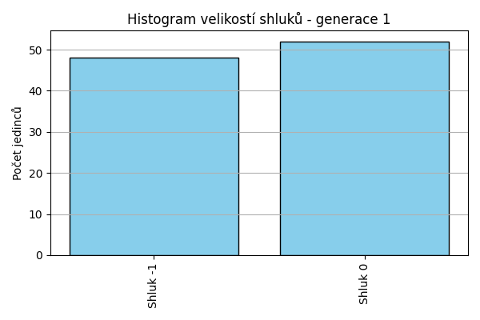
Stabilita mezi generací 0 → 1:
Shluk -1 → -1: 13 jedinců (81.2 %)
Shluk -1 → 0: 3 jedinců (18.8 %)
Shluk 0 → -1: 35 jedinců (41.7 %)
Shluk 0 → 0: 49 jedinců (58.3 %)
Jaccardovo mapování a overlap: Generace 0 → 1
- Shluk 0 → 0 (Jaccard: 0.56, Overlap: 0.94)
Posun centroidů mezi generací 0 → 1:
- Shluk 0: 398.1961
Generace 2
Stabilita mezi generací 1 → 2:
Shluk -1 → -1: 16 jedinců (33.3 %)
Shluk -1 → 0: 32 jedinců (66.7 %)
Shluk 0 → 0: 47 jedinců (90.4 %)
Shluk 0 → -1: 5 jedinců (9.6 %)
Jaccardovo mapování a overlap: Generace 1 → 2
- Shluk 0 → 0 (Jaccard: 0.56, Overlap: 0.90)
Posun centroidů mezi generací 1 → 2:
- Shluk 0: 272.1205
Generace 3
Stabilita mezi generací 2 → 3:
Shluk -1 → -1: 11 jedinců (52.4 %)
Shluk -1 → 0: 10 jedinců (47.6 %)
Shluk 0 → 0: 54 jedinců (68.4 %)
Shluk 0 → -1: 25 jedinců (31.6 %)
Jaccardovo mapování a overlap: Generace 2 → 3
- Shluk 0 → 0 (Jaccard: 0.61, Overlap: 0.84)
Posun centroidů mezi generací 2 → 3:
- Shluk 0: 162.2356
Generace 4
Stabilita mezi generací 3 → 4:
Shluk -1 → -1: 23 jedinců (63.9 %)
Shluk -1 → 0: 13 jedinců (36.1 %)
Shluk 0 → -1: 9 jedinců (14.1 %)
Shluk 0 → 0: 55 jedinců (85.9 %)
Jaccardovo mapování a overlap: Generace 3 → 4
- Shluk 0 → 0 (Jaccard: 0.71, Overlap: 0.86)
Posun centroidů mezi generací 3 → 4:
- Shluk 0: 82.0255
Generace 5

Stabilita mezi generací 4 → 5:
Shluk -1 → -1: 19 jedinců (59.4 %)
Shluk -1 → 0: 13 jedinců (40.6 %)
Shluk 0 → 0: 58 jedinců (85.3 %)
Shluk 0 → -1: 10 jedinců (14.7 %)
Jaccardovo mapování a overlap: Generace 4 → 5
- Shluk 0 → 0 (Jaccard: 0.72, Overlap: 0.85)
Posun centroidů mezi generací 4 → 5:
- Shluk 0: 62.3905
Generace 6
Stabilita mezi generací 5 → 6:
Shluk -1 → -1: 23 jedinců (79.3 %)
Shluk -1 → 0: 6 jedinců (20.7 %)
Shluk 0 → 0: 52 jedinců (73.2 %)
Shluk 0 → -1: 19 jedinců (26.8 %)
Jaccardovo mapování a overlap: Generace 5 → 6
- Shluk 0 → 0 (Jaccard: 0.68, Overlap: 0.90)
Posun centroidů mezi generací 5 → 6:
- Shluk 0: 90.1242
Generace 7
Stabilita mezi generací 6 → 7:
Shluk -1 → -1: 25 jedinců (59.5 %)
Shluk -1 → 0: 17 jedinců (40.5 %)
Shluk 0 → -1: 5 jedinců (8.6 %)
Shluk 0 → 0: 53 jedinců (91.4 %)
Jaccardovo mapování a overlap: Generace 6 → 7
- Shluk 0 → 0 (Jaccard: 0.71, Overlap: 0.91)
Posun centroidů mezi generací 6 → 7:
- Shluk 0: 56.7278
Generace 8
Stabilita mezi generací 7 → 8:
Shluk -1 → -1: 18 jedinců (60.0 %)
Shluk -1 → 0: 12 jedinců (40.0 %)
Shluk 0 → 0: 56 jedinců (80.0 %)
Shluk 0 → -1: 14 jedinců (20.0 %)
Jaccardovo mapování a overlap: Generace 7 → 8
- Shluk 0 → 0 (Jaccard: 0.68, Overlap: 0.82)
Posun centroidů mezi generací 7 → 8:
- Shluk 0: 60.1800
Generace 9
Stabilita mezi generací 8 → 9:
Shluk -1 → -1: 27 jedinců (84.4 %)
Shluk -1 → 0: 5 jedinců (15.6 %)
Shluk 0 → 0: 59 jedinců (86.8 %)
Shluk 0 → -1: 9 jedinců (13.2 %)
Jaccardovo mapování a overlap: Generace 8 → 9
- Shluk 0 → 0 (Jaccard: 0.81, Overlap: 0.92)
Posun centroidů mezi generací 8 → 9:
- Shluk 0: 57.3441
Generace 10
Stabilita mezi generací 9 → 10:
Shluk -1 → -1: 24 jedinců (66.7 %)
Shluk -1 → 0: 12 jedinců (33.3 %)
Shluk 0 → 0: 51 jedinců (79.7 %)
Shluk 0 → -1: 13 jedinců (20.3 %)
Jaccardovo mapování a overlap: Generace 9 → 10
- Shluk 0 → 0 (Jaccard: 0.67, Overlap: 0.81)
Posun centroidů mezi generací 9 → 10:
- Shluk 0: 65.1748
Generace 11
Stabilita mezi generací 10 → 11:
Shluk -1 → -1: 25 jedinců (67.6 %)
Shluk -1 → 0: 12 jedinců (32.4 %)
Shluk 0 → 0: 57 jedinců (90.5 %)
Shluk 0 → -1: 6 jedinců (9.5 %)
Jaccardovo mapování a overlap: Generace 10 → 11
- Shluk 0 → 0 (Jaccard: 0.76, Overlap: 0.90)
Posun centroidů mezi generací 10 → 11:
- Shluk 0: 49.8388
Generace 12
Stabilita mezi generací 11 → 12:
Shluk -1 → -1: 24 jedinců (77.4 %)
Shluk -1 → 0: 7 jedinců (22.6 %)
Shluk 0 → -1: 11 jedinců (15.9 %)
Shluk 0 → 0: 58 jedinců (84.1 %)
Jaccardovo mapování a overlap: Generace 11 → 12
- Shluk 0 → 0 (Jaccard: 0.76, Overlap: 0.89)
Posun centroidů mezi generací 11 → 12:
- Shluk 0: 225.3728
Generace 13
Stabilita mezi generací 12 → 13:
Shluk -1 → -1: 28 jedinců (80.0 %)
Shluk -1 → 0: 7 jedinců (20.0 %)
Shluk 0 → -1: 17 jedinců (26.2 %)
Shluk 0 → 0: 48 jedinců (73.8 %)
Jaccardovo mapování a overlap: Generace 12 → 13
- Shluk 0 → 0 (Jaccard: 0.67, Overlap: 0.87)
Posun centroidů mezi generací 12 → 13:
- Shluk 0: 106.1984
Generace 14
Stabilita mezi generací 13 → 14:
Shluk -1 → -1: 32 jedinců (71.1 %)
Shluk -1 → 0: 13 jedinců (28.9 %)
Shluk 0 → 0: 39 jedinců (70.9 %)
Shluk 0 → -1: 16 jedinců (29.1 %)
Jaccardovo mapování a overlap: Generace 13 → 14
- Shluk 0 → 0 (Jaccard: 0.57, Overlap: 0.75)
Posun centroidů mezi generací 13 → 14:
- Shluk 0: 136.4554
Generace 15

Stabilita mezi generací 14 → 15:
Shluk -1 → -1: 28 jedinců (58.3 %)
Shluk -1 → 0: 20 jedinců (41.7 %)
Shluk 0 → -1: 11 jedinců (21.2 %)
Shluk 0 → 0: 41 jedinců (78.8 %)
Jaccardovo mapování a overlap: Generace 14 → 15
- Shluk 0 → 0 (Jaccard: 0.57, Overlap: 0.79)
Posun centroidů mezi generací 14 → 15:
- Shluk 0: 119.0655
Generace 16
Stabilita mezi generací 15 → 16:
Shluk -1 → -1: 25 jedinců (64.1 %)
Shluk -1 → 0: 14 jedinců (35.9 %)
Shluk 0 → 0: 50 jedinců (82.0 %)
Shluk 0 → -1: 11 jedinců (18.0 %)
Jaccardovo mapování a overlap: Generace 15 → 16
- Shluk 0 → 0 (Jaccard: 0.67, Overlap: 0.82)
Posun centroidů mezi generací 15 → 16:
- Shluk 0: 99.5072
Generace 17
Stabilita mezi generací 16 → 17:
Shluk -1 → -1: 25 jedinců (69.4 %)
Shluk -1 → 0: 11 jedinců (30.6 %)
Shluk 0 → 0: 45 jedinců (70.3 %)
Shluk 0 → -1: 19 jedinců (29.7 %)
Jaccardovo mapování a overlap: Generace 16 → 17
- Shluk 0 → 0 (Jaccard: 0.60, Overlap: 0.80)
Posun centroidů mezi generací 16 → 17:
- Shluk 0: 78.1599
Generace 18

Stabilita mezi generací 17 → 18:
Shluk -1 → -1: 25 jedinců (56.8 %)
Shluk -1 → 0: 19 jedinců (43.2 %)
Shluk 0 → 0: 41 jedinců (73.2 %)
Shluk 0 → -1: 15 jedinců (26.8 %)
Jaccardovo mapování a overlap: Generace 17 → 18
- Shluk 0 → 0 (Jaccard: 0.55, Overlap: 0.73)
Posun centroidů mezi generací 17 → 18:
- Shluk 0: 67.0906
Generace 19
Stabilita mezi generací 18 → 19:
Shluk -1 → -1: 18 jedinců (45.0 %)
Shluk -1 → 0: 22 jedinců (55.0 %)
Shluk 0 → 0: 55 jedinců (91.7 %)
Shluk 0 → -1: 5 jedinců (8.3 %)
Jaccardovo mapování a overlap: Generace 18 → 19
- Shluk 0 → 0 (Jaccard: 0.67, Overlap: 0.92)
Posun centroidů mezi generací 18 → 19:
- Shluk 0: 63.1670
Generace 20
Stabilita mezi generací 19 → 20:
Shluk -1 → -1: 19 jedinců (82.6 %)
Shluk -1 → 0: 4 jedinců (17.4 %)
Shluk 0 → -1: 20 jedinců (26.0 %)
Shluk 0 → 0: 57 jedinců (74.0 %)
Jaccardovo mapování a overlap: Generace 19 → 20
- Shluk 0 → 0 (Jaccard: 0.70, Overlap: 0.93)
Posun centroidů mezi generací 19 → 20:
- Shluk 0: 69.9922
Generace 21
Stabilita mezi generací 20 → 21:
Shluk -1 → -1: 25 jedinců (64.1 %)
Shluk -1 → 0: 14 jedinců (35.9 %)
Shluk 0 → 0: 47 jedinců (77.0 %)
Shluk 0 → -1: 14 jedinců (23.0 %)
Jaccardovo mapování a overlap: Generace 20 → 21
- Shluk 0 → 0 (Jaccard: 0.63, Overlap: 0.77)
Posun centroidů mezi generací 20 → 21:
- Shluk 0: 85.0116

Generace 22
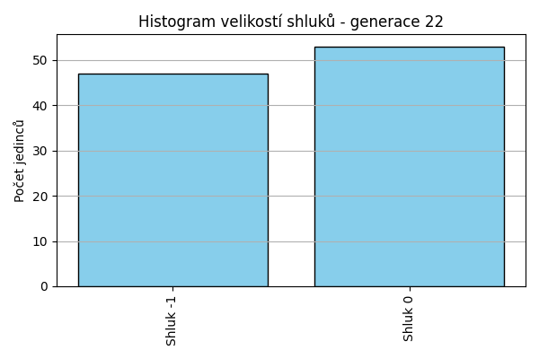
Stabilita mezi generací 21 → 22:
Shluk -1 → -1: 29 jedinců (74.4 %)
Shluk -1 → 0: 10 jedinců (25.6 %)
Shluk 0 → -1: 18 jedinců (29.5 %)
Shluk 0 → 0: 43 jedinců (70.5 %)
Jaccardovo mapování a overlap: Generace 21 → 22
- Shluk 0 → 0 (Jaccard: 0.61, Overlap: 0.81)
Posun centroidů mezi generací 21 → 22:
- Shluk 0: 49.1166
Generace 23
Stabilita mezi generací 22 → 23:
Shluk -1 → -1: 20 jedinců (42.6 %)
Shluk -1 → 0: 27 jedinců (57.4 %)
Shluk 0 → 0: 51 jedinců (96.2 %)
Shluk 0 → -1: 2 jedinců (3.8 %)
Jaccardovo mapování a overlap: Generace 22 → 23
- Shluk 0 → 0 (Jaccard: 0.64, Overlap: 0.96)
Posun centroidů mezi generací 22 → 23:
- Shluk 0: 66.6516
Generace 24
Stabilita mezi generací 23 → 24:
Shluk -1 → -1: 21 jedinců (95.5 %)
Shluk -1 → 0: 1 jedinců (4.5 %)
Shluk 0 → 0: 65 jedinců (83.3 %)
Shluk 0 → -1: 13 jedinců (16.7 %)
Jaccardovo mapování a overlap: Generace 23 → 24
- Shluk 0 → 0 (Jaccard: 0.82, Overlap: 0.98)
Posun centroidů mezi generací 23 → 24:
- Shluk 0: 50.0027
Generace 25
Stabilita mezi generací 24 → 25:
Shluk -1 → -1: 16 jedinců (47.1 %)
Shluk -1 → 0: 18 jedinců (52.9 %)
Shluk 0 → 0: 60 jedinců (90.9 %)
Shluk 0 → -1: 6 jedinců (9.1 %)
Jaccardovo mapování a overlap: Generace 24 → 25
- Shluk 0 → 0 (Jaccard: 0.71, Overlap: 0.91)
Posun centroidů mezi generací 24 → 25:
- Shluk 0: 44.1304
Generace 26

Stabilita mezi generací 25 → 26:
Shluk -1 → -1: 19 jedinců (86.4 %)
Shluk -1 → 0: 3 jedinců (13.6 %)
Shluk 0 → 0: 48 jedinců (61.5 %)
Shluk 0 → -1: 30 jedinců (38.5 %)
Jaccardovo mapování a overlap: Generace 25 → 26
- Shluk 0 → 0 (Jaccard: 0.59, Overlap: 0.94)
Posun centroidů mezi generací 25 → 26:
- Shluk 0: 203.9373
Generace 27
Stabilita mezi generací 26 → 27:
Shluk -1 → -1: 16 jedinců (32.7 %)
Shluk -1 → 0: 33 jedinců (67.3 %)
Shluk 0 → 0: 48 jedinců (94.1 %)
Shluk 0 → -1: 3 jedinců (5.9 %)
Jaccardovo mapování a overlap: Generace 26 → 27
- Shluk 0 → 0 (Jaccard: 0.57, Overlap: 0.94)
Posun centroidů mezi generací 26 → 27:
- Shluk 0: 34.3195
Generace 28
Stabilita mezi generací 27 → 28:
Shluk -1 → -1: 13 jedinců (68.4 %)
Shluk -1 → 0: 6 jedinců (31.6 %)
Shluk 0 → 0: 62 jedinců (76.5 %)
Shluk 0 → -1: 19 jedinců (23.5 %)
Jaccardovo mapování a overlap: Generace 27 → 28
- Shluk 0 → 0 (Jaccard: 0.71, Overlap: 0.91)
Posun centroidů mezi generací 27 → 28:
- Shluk 0: 84.1690
Generace 29
Stabilita mezi generací 28 → 29:
Shluk -1 → -1: 19 jedinců (59.4 %)
Shluk -1 → 0: 13 jedinců (40.6 %)
Shluk 0 → 0: 62 jedinců (91.2 %)
Shluk 0 → -1: 6 jedinců (8.8 %)
Jaccardovo mapování a overlap: Generace 28 → 29
- Shluk 0 → 0 (Jaccard: 0.77, Overlap: 0.91)
Posun centroidů mezi generací 28 → 29:
- Shluk 0: 49.8146
Generace 30
Stabilita mezi generací 29 → 30:
Shluk -1 → -1: 21 jedinců (84.0 %)
Shluk -1 → 0: 4 jedinců (16.0 %)
Shluk 0 → -1: 23 jedinců (30.7 %)
Shluk 0 → 0: 52 jedinců (69.3 %)
Jaccardovo mapování a overlap: Generace 29 → 30
- Shluk 0 → 0 (Jaccard: 0.66, Overlap: 0.93)
Posun centroidů mezi generací 29 → 30:
- Shluk 0: 84.4811
Generace 31
Stabilita mezi generací 30 → 31:
Shluk -1 → -1: 28 jedinců (63.6 %)
Shluk -1 → 0: 16 jedinců (36.4 %)
Shluk 0 → 0: 35 jedinců (62.5 %)
Shluk 0 → -1: 21 jedinců (37.5 %)
Jaccardovo mapování a overlap: Generace 30 → 31
- Shluk 0 → 0 (Jaccard: 0.49, Overlap: 0.69)
Posun centroidů mezi generací 30 → 31:
- Shluk 0: 43.4201
Generace 32
Stabilita mezi generací 31 → 32:
Shluk -1 → -1: 30 jedinců (61.2 %)
Shluk -1 → 0: 19 jedinců (38.8 %)
Shluk 0 → -1: 9 jedinců (17.6 %)
Shluk 0 → 0: 42 jedinců (82.4 %)
Jaccardovo mapování a overlap: Generace 31 → 32
- Shluk 0 → 0 (Jaccard: 0.60, Overlap: 0.82)
Posun centroidů mezi generací 31 → 32:
- Shluk 0: 63.0115
Generace 33
Stabilita mezi generací 32 → 33:
Shluk -1 → -1: 20 jedinců (51.3 %)
Shluk -1 → 0: 19 jedinců (48.7 %)
Shluk 0 → -1: 15 jedinců (24.6 %)
Shluk 0 → 0: 46 jedinců (75.4 %)
Jaccardovo mapování a overlap: Generace 32 → 33
- Shluk 0 → 0 (Jaccard: 0.57, Overlap: 0.75)
Posun centroidů mezi generací 32 → 33:
- Shluk 0: 53.8368

Generace 34
Stabilita mezi generací 33 → 34:
Shluk -1 → -1: 19 jedinců (54.3 %)
Shluk -1 → 0: 16 jedinců (45.7 %)
Shluk 0 → -1: 13 jedinců (20.0 %)
Shluk 0 → 0: 52 jedinců (80.0 %)
Jaccardovo mapování a overlap: Generace 33 → 34
- Shluk 0 → 0 (Jaccard: 0.64, Overlap: 0.80)
Posun centroidů mezi generací 33 → 34:
- Shluk 0: 63.6694
Generace 35
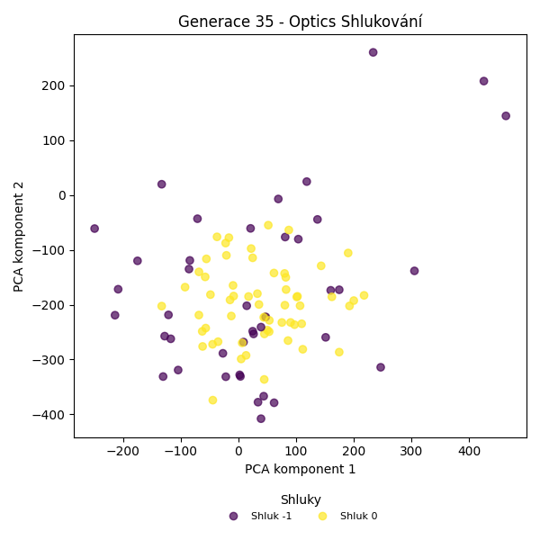
Stabilita mezi generací 34 → 35:
Shluk -1 → -1: 21 jedinců (65.6 %)
Shluk -1 → 0: 11 jedinců (34.4 %)
Shluk 0 → 0: 48 jedinců (70.6 %)
Shluk 0 → -1: 20 jedinců (29.4 %)
Jaccardovo mapování a overlap: Generace 34 → 35
- Shluk 0 → 0 (Jaccard: 0.61, Overlap: 0.81)
Posun centroidů mezi generací 34 → 35:
- Shluk 0: 195.7594
Generace 36
Stabilita mezi generací 35 → 36:
Shluk -1 → -1: 22 jedinců (53.7 %)
Shluk -1 → 0: 19 jedinců (46.3 %)
Shluk 0 → 0: 47 jedinců (79.7 %)
Shluk 0 → -1: 12 jedinců (20.3 %)
Jaccardovo mapování a overlap: Generace 35 → 36
- Shluk 0 → 0 (Jaccard: 0.60, Overlap: 0.80)
Posun centroidů mezi generací 35 → 36:
- Shluk 0: 108.3850
Generace 37
Stabilita mezi generací 36 → 37:
Shluk -1 → -1: 23 jedinců (67.6 %)
Shluk -1 → 0: 11 jedinců (32.4 %)
Shluk 0 → 0: 55 jedinců (83.3 %)
Shluk 0 → -1: 11 jedinců (16.7 %)
Jaccardovo mapování a overlap: Generace 36 → 37
- Shluk 0 → 0 (Jaccard: 0.71, Overlap: 0.83)
Posun centroidů mezi generací 36 → 37:
- Shluk 0: 56.3632
Generace 38
Stabilita mezi generací 37 → 38:
Shluk -1 → -1: 21 jedinců (61.8 %)
Shluk -1 → 0: 13 jedinců (38.2 %)
Shluk 0 → -1: 19 jedinců (28.8 %)
Shluk 0 → 0: 47 jedinců (71.2 %)
Jaccardovo mapování a overlap: Generace 37 → 38
- Shluk 0 → 0 (Jaccard: 0.59, Overlap: 0.78)
Posun centroidů mezi generací 37 → 38:
- Shluk 0: 98.1620
Generace 39
Stabilita mezi generací 38 → 39:
Shluk -1 → -1: 19 jedinců (47.5 %)
Shluk -1 → 0: 21 jedinců (52.5 %)
Shluk 0 → -1: 9 jedinců (15.0 %)
Shluk 0 → 0: 51 jedinců (85.0 %)
Jaccardovo mapování a overlap: Generace 38 → 39
- Shluk 0 → 0 (Jaccard: 0.63, Overlap: 0.85)
Posun centroidů mezi generací 38 → 39:
- Shluk 0: 175.2692
Generace 40
Stabilita mezi generací 39 → 40:
Shluk -1 → -1: 16 jedinců (57.1 %)
Shluk -1 → 0: 12 jedinců (42.9 %)
Shluk 0 → -1: 17 jedinců (23.6 %)
Shluk 0 → 0: 55 jedinců (76.4 %)
Jaccardovo mapování a overlap: Generace 39 → 40
- Shluk 0 → 0 (Jaccard: 0.65, Overlap: 0.82)
Posun centroidů mezi generací 39 → 40:
- Shluk 0: 101.0100
Generace 41
Stabilita mezi generací 40 → 41:
Shluk -1 → -1: 21 jedinců (63.6 %)
Shluk -1 → 0: 11 jedinců (33.3 %)
Shluk -1 → 1: 1 jedinců (3.0 %)
Shluk 0 → -1: 20 jedinců (29.9 %)
Shluk 0 → 0: 39 jedinců (58.2 %)
Shluk 0 → 1: 8 jedinců (11.9 %)
Jaccardovo mapování a overlap: Generace 40 → 41
- Shluk 0 → 0 (Jaccard: 0.50, Overlap: 0.78)
Posun centroidů mezi generací 40 → 41:
- Shluk 0: 97.6884
Generace 42
Stabilita mezi generací 41 → 42:
Shluk -1 → -1: 22 jedinců (53.7 %)
Shluk -1 → 0: 19 jedinců (46.3 %)
Shluk 0 → -1: 15 jedinců (30.0 %)
Shluk 0 → 0: 35 jedinců (70.0 %)
Shluk 1 → 0: 9 jedinců (100.0 %)
Jaccardovo mapování a overlap: Generace 41 → 42
- Shluk 0 → 0 (Jaccard: 0.45, Overlap: 0.70)
- Shluk 1 → 0 (Jaccard: 0.14, Overlap: 1.00)
Posun centroidů mezi generací 41 → 42:
- Shluk 0: 48.5860
Generace 43
Stabilita mezi generací 42 → 43:
Shluk -1 → -1: 21 jedinců (56.8 %)
Shluk -1 → 0: 16 jedinců (43.2 %)
Shluk 0 → 0: 43 jedinců (68.3 %)
Shluk 0 → -1: 20 jedinců (31.7 %)
Jaccardovo mapování a overlap: Generace 42 → 43
- Shluk 0 → 0 (Jaccard: 0.54, Overlap: 0.73)
Posun centroidů mezi generací 42 → 43:
- Shluk 0: 65.3880
Generace 44
Stabilita mezi generací 43 → 44:
Shluk -1 → -1: 22 jedinců (53.7 %)
Shluk -1 → 0: 19 jedinců (46.3 %)
Shluk 0 → 0: 39 jedinců (66.1 %)
Shluk 0 → -1: 20 jedinců (33.9 %)
Jaccardovo mapování a overlap: Generace 43 → 44
- Shluk 0 → 0 (Jaccard: 0.50, Overlap: 0.67)
Posun centroidů mezi generací 43 → 44:
- Shluk 0: 80.6365
Generace 45
Stabilita mezi generací 44 → 45:
Shluk -1 → -1: 25 jedinců (59.5 %)
Shluk -1 → 0: 17 jedinců (40.5 %)
Shluk 0 → 0: 38 jedinců (65.5 %)
Shluk 0 → -1: 20 jedinců (34.5 %)
Jaccardovo mapování a overlap: Generace 44 → 45
- Shluk 0 → 0 (Jaccard: 0.51, Overlap: 0.69)
Posun centroidů mezi generací 44 → 45:
- Shluk 0: 44.5625
Generace 46
Stabilita mezi generací 45 → 46:
Shluk -1 → -1: 18 jedinců (40.0 %)
Shluk -1 → 0: 27 jedinců (60.0 %)
Shluk 0 → -1: 16 jedinců (29.1 %)
Shluk 0 → 0: 39 jedinců (70.9 %)
Jaccardovo mapování a overlap: Generace 45 → 46
- Shluk 0 → 0 (Jaccard: 0.48, Overlap: 0.71)
Posun centroidů mezi generací 45 → 46:
- Shluk 0: 39.8851
Generace 47
Stabilita mezi generací 46 → 47:
Shluk -1 → -1: 21 jedinců (61.8 %)
Shluk -1 → 0: 13 jedinců (38.2 %)
Shluk 0 → -1: 19 jedinců (28.8 %)
Shluk 0 → 0: 47 jedinců (71.2 %)
Jaccardovo mapování a overlap: Generace 46 → 47
- Shluk 0 → 0 (Jaccard: 0.59, Overlap: 0.78)
Posun centroidů mezi generací 46 → 47:
- Shluk 0: 63.0117
Generace 48

Stabilita mezi generací 47 → 48:
Shluk -1 → -1: 31 jedinců (77.5 %)
Shluk -1 → 0: 9 jedinců (22.5 %)
Shluk 0 → 0: 45 jedinců (75.0 %)
Shluk 0 → -1: 15 jedinců (25.0 %)
Jaccardovo mapování a overlap: Generace 47 → 48
- Shluk 0 → 0 (Jaccard: 0.65, Overlap: 0.83)
Posun centroidů mezi generací 47 → 48:
- Shluk 0: 55.2785
Generace 49
Stabilita mezi generací 48 → 49:
Shluk -1 → -1: 22 jedinců (47.8 %)
Shluk -1 → 0: 24 jedinců (52.2 %)
Shluk 0 → 0: 42 jedinců (77.8 %)
Shluk 0 → -1: 12 jedinců (22.2 %)
Jaccardovo mapování a overlap: Generace 48 → 49
- Shluk 0 → 0 (Jaccard: 0.54, Overlap: 0.78)
Posun centroidů mezi generací 48 → 49:
- Shluk 0: 49.6108
Generace 50
Stabilita mezi generací 49 → 50:
Shluk -1 → -1: 23 jedinců (67.6 %)
Shluk -1 → 0: 11 jedinců (32.4 %)
Shluk 0 → -1: 18 jedinců (27.3 %)
Shluk 0 → 0: 48 jedinců (72.7 %)
Jaccardovo mapování a overlap: Generace 49 → 50
- Shluk 0 → 0 (Jaccard: 0.62, Overlap: 0.81)
Posun centroidů mezi generací 49 → 50:
- Shluk 0: 70.0478
Generace 51
Stabilita mezi generací 50 → 51:
Shluk -1 → -1: 26 jedinců (63.4 %)
Shluk -1 → 0: 15 jedinců (36.6 %)
Shluk 0 → 0: 46 jedinců (78.0 %)
Shluk 0 → -1: 13 jedinců (22.0 %)
Jaccardovo mapování a overlap: Generace 50 → 51
- Shluk 0 → 0 (Jaccard: 0.62, Overlap: 0.78)
Posun centroidů mezi generací 50 → 51:
- Shluk 0: 44.5439
Generace 52
Stabilita mezi generací 51 → 52:
Shluk -1 → -1: 14 jedinců (35.9 %)
Shluk -1 → 0: 25 jedinců (64.1 %)
Shluk 0 → 0: 54 jedinců (88.5 %)
Shluk 0 → -1: 7 jedinců (11.5 %)
Jaccardovo mapování a overlap: Generace 51 → 52
- Shluk 0 → 0 (Jaccard: 0.63, Overlap: 0.89)
Posun centroidů mezi generací 51 → 52:
- Shluk 0: 54.3118
Generace 53

Stabilita mezi generací 52 → 53:
Shluk -1 → -1: 11 jedinců (52.4 %)
Shluk -1 → 0: 10 jedinců (47.6 %)
Shluk 0 → 0: 68 jedinců (86.1 %)
Shluk 0 → -1: 11 jedinců (13.9 %)
Jaccardovo mapování a overlap: Generace 52 → 53
- Shluk 0 → 0 (Jaccard: 0.76, Overlap: 0.87)
Posun centroidů mezi generací 52 → 53:
- Shluk 0: 33.6072
Generace 54
Stabilita mezi generací 53 → 54:
Shluk -1 → -1: 18 jedinců (81.8 %)
Shluk -1 → 0: 4 jedinců (18.2 %)
Shluk 0 → 0: 54 jedinců (69.2 %)
Shluk 0 → -1: 24 jedinců (30.8 %)
Jaccardovo mapování a overlap: Generace 53 → 54
- Shluk 0 → 0 (Jaccard: 0.66, Overlap: 0.93)
Posun centroidů mezi generací 53 → 54:
- Shluk 0: 28.8331
Generace 55
Stabilita mezi generací 54 → 55:
Shluk -1 → -1: 19 jedinců (45.2 %)
Shluk -1 → 0: 23 jedinců (54.8 %)
Shluk 0 → 0: 55 jedinců (94.8 %)
Shluk 0 → -1: 3 jedinců (5.2 %)
Jaccardovo mapování a overlap: Generace 54 → 55
- Shluk 0 → 0 (Jaccard: 0.68, Overlap: 0.95)
Posun centroidů mezi generací 54 → 55:
- Shluk 0: 64.1814
Generace 56
Stabilita mezi generací 55 → 56:
Shluk -1 → -1: 19 jedinců (86.4 %)
Shluk -1 → 0: 3 jedinců (13.6 %)
Shluk 0 → -1: 29 jedinců (37.2 %)
Shluk 0 → 0: 49 jedinců (62.8 %)
Jaccardovo mapování a overlap: Generace 55 → 56
- Shluk 0 → 0 (Jaccard: 0.60, Overlap: 0.94)
Posun centroidů mezi generací 55 → 56:
- Shluk 0: 62.8018
Generace 57
Stabilita mezi generací 56 → 57:
Shluk -1 → -1: 25 jedinců (52.1 %)
Shluk -1 → 0: 23 jedinců (47.9 %)
Shluk 0 → -1: 9 jedinců (17.3 %)
Shluk 0 → 0: 43 jedinců (82.7 %)
Jaccardovo mapování a overlap: Generace 56 → 57
- Shluk 0 → 0 (Jaccard: 0.57, Overlap: 0.83)
Posun centroidů mezi generací 56 → 57:
- Shluk 0: 34.1270
Generace 58
Stabilita mezi generací 57 → 58:
Shluk -1 → -1: 23 jedinců (67.6 %)
Shluk -1 → 0: 11 jedinců (32.4 %)
Shluk 0 → 0: 55 jedinců (83.3 %)
Shluk 0 → -1: 11 jedinců (16.7 %)
Jaccardovo mapování a overlap: Generace 57 → 58
- Shluk 0 → 0 (Jaccard: 0.71, Overlap: 0.83)
Posun centroidů mezi generací 57 → 58:
- Shluk 0: 29.7577
Generace 59
Stabilita mezi generací 58 → 59:
Shluk -1 → -1: 21 jedinců (61.8 %)
Shluk -1 → 0: 13 jedinců (38.2 %)
Shluk 0 → -1: 15 jedinců (22.7 %)
Shluk 0 → 0: 51 jedinců (77.3 %)
Jaccardovo mapování a overlap: Generace 58 → 59
- Shluk 0 → 0 (Jaccard: 0.65, Overlap: 0.80)
Posun centroidů mezi generací 58 → 59:
- Shluk 0: 35.6149

Generace 60
Stabilita mezi generací 59 → 60:
Shluk -1 → -1: 23 jedinců (63.9 %)
Shluk -1 → 0: 13 jedinců (36.1 %)
Shluk 0 → 0: 43 jedinců (67.2 %)
Shluk 0 → -1: 21 jedinců (32.8 %)
Jaccardovo mapování a overlap: Generace 59 → 60
- Shluk 0 → 0 (Jaccard: 0.56, Overlap: 0.77)
Posun centroidů mezi generací 59 → 60:
- Shluk 0: 59.2459
Generace 61
Stabilita mezi generací 60 → 61:
Shluk -1 → -1: 26 jedinců (59.1 %)
Shluk -1 → 0: 18 jedinců (40.9 %)
Shluk 0 → 0: 43 jedinců (76.8 %)
Shluk 0 → -1: 13 jedinců (23.2 %)
Jaccardovo mapování a overlap: Generace 60 → 61
- Shluk 0 → 0 (Jaccard: 0.58, Overlap: 0.77)
Posun centroidů mezi generací 60 → 61:
- Shluk 0: 34.3755
Generace 62
Stabilita mezi generací 61 → 62:
Shluk -1 → -1: 22 jedinců (56.4 %)
Shluk -1 → 0: 17 jedinců (43.6 %)
Shluk 0 → 0: 56 jedinců (91.8 %)
Shluk 0 → -1: 5 jedinců (8.2 %)
Jaccardovo mapování a overlap: Generace 61 → 62
- Shluk 0 → 0 (Jaccard: 0.72, Overlap: 0.92)
Posun centroidů mezi generací 61 → 62:
- Shluk 0: 31.3320
Generace 63
Stabilita mezi generací 62 → 63:
Shluk -1 → -1: 15 jedinců (55.6 %)
Shluk -1 → 0: 12 jedinců (44.4 %)
Shluk 0 → -1: 13 jedinců (17.8 %)
Shluk 0 → 0: 60 jedinců (82.2 %)
Jaccardovo mapování a overlap: Generace 62 → 63
- Shluk 0 → 0 (Jaccard: 0.71, Overlap: 0.83)
Posun centroidů mezi generací 62 → 63:
- Shluk 0: 26.4726
Generace 64
Stabilita mezi generací 63 → 64:
Shluk -1 → -1: 20 jedinců (71.4 %)
Shluk -1 → 0: 8 jedinců (28.6 %)
Shluk 0 → 0: 44 jedinců (61.1 %)
Shluk 0 → -1: 28 jedinců (38.9 %)
Jaccardovo mapování a overlap: Generace 63 → 64
- Shluk 0 → 0 (Jaccard: 0.55, Overlap: 0.85)
Posun centroidů mezi generací 63 → 64:
- Shluk 0: 179.7456
Generace 65
Stabilita mezi generací 64 → 65:
Shluk -1 → -1: 28 jedinců (58.3 %)
Shluk -1 → 0: 20 jedinců (41.7 %)
Shluk 0 → 0: 40 jedinců (76.9 %)
Shluk 0 → -1: 12 jedinců (23.1 %)
Jaccardovo mapování a overlap: Generace 64 → 65
- Shluk 0 → 0 (Jaccard: 0.56, Overlap: 0.77)
Posun centroidů mezi generací 64 → 65:
- Shluk 0: 81.5685
Generace 66
Stabilita mezi generací 65 → 66:
Shluk -1 → -1: 25 jedinců (62.5 %)
Shluk -1 → 0: 15 jedinců (37.5 %)
Shluk 0 → -1: 21 jedinců (35.0 %)
Shluk 0 → 0: 39 jedinců (65.0 %)
Jaccardovo mapování a overlap: Generace 65 → 66
- Shluk 0 → 0 (Jaccard: 0.52, Overlap: 0.72)
Posun centroidů mezi generací 65 → 66:
- Shluk 0: 94.7819
Generace 67
Stabilita mezi generací 66 → 67:
Shluk -1 → -1: 28 jedinců (60.9 %)
Shluk -1 → 0: 18 jedinců (39.1 %)
Shluk 0 → -1: 18 jedinců (33.3 %)
Shluk 0 → 0: 36 jedinců (66.7 %)
Jaccardovo mapování a overlap: Generace 66 → 67
- Shluk 0 → 0 (Jaccard: 0.50, Overlap: 0.67)
Posun centroidů mezi generací 66 → 67:
- Shluk 0: 27.7671
Generace 68
Stabilita mezi generací 67 → 68:
Shluk -1 → -1: 17 jedinců (37.0 %)
Shluk -1 → 0: 29 jedinců (63.0 %)
Shluk 0 → 0: 45 jedinců (83.3 %)
Shluk 0 → -1: 9 jedinců (16.7 %)
Jaccardovo mapování a overlap: Generace 67 → 68
- Shluk 0 → 0 (Jaccard: 0.54, Overlap: 0.83)
Posun centroidů mezi generací 67 → 68:
- Shluk 0: 54.3024
Generace 69
Stabilita mezi generací 68 → 69:
Shluk -1 → -1: 20 jedinců (76.9 %)
Shluk -1 → 0: 6 jedinců (23.1 %)
Shluk 0 → -1: 15 jedinců (20.3 %)
Shluk 0 → 0: 59 jedinců (79.7 %)
Jaccardovo mapování a overlap: Generace 68 → 69
- Shluk 0 → 0 (Jaccard: 0.74, Overlap: 0.91)
Posun centroidů mezi generací 68 → 69:
- Shluk 0: 28.9312
Generace 70
Stabilita mezi generací 69 → 70:
Shluk -1 → -1: 16 jedinců (45.7 %)
Shluk -1 → 0: 19 jedinců (54.3 %)
Shluk 0 → -1: 12 jedinců (18.5 %)
Shluk 0 → 0: 53 jedinců (81.5 %)
Jaccardovo mapování a overlap: Generace 69 → 70
- Shluk 0 → 0 (Jaccard: 0.63, Overlap: 0.82)
Posun centroidů mezi generací 69 → 70:
- Shluk 0: 49.1288
Generace 71

Stabilita mezi generací 70 → 71:
Shluk -1 → -1: 20 jedinců (71.4 %)
Shluk -1 → 0: 8 jedinců (28.6 %)
Shluk 0 → -1: 26 jedinců (36.1 %)
Shluk 0 → 0: 46 jedinců (63.9 %)
Jaccardovo mapování a overlap: Generace 70 → 71
- Shluk 0 → 0 (Jaccard: 0.57, Overlap: 0.85)
Posun centroidů mezi generací 70 → 71:
- Shluk 0: 45.3160
Generace 72
Stabilita mezi generací 71 → 72:
Shluk -1 → -1: 25 jedinců (54.3 %)
Shluk -1 → 0: 21 jedinců (45.7 %)
Shluk 0 → 0: 35 jedinců (64.8 %)
Shluk 0 → -1: 15 jedinců (27.8 %)
Shluk 0 → 2: 4 jedinců (7.4 %)
Jaccardovo mapování a overlap: Generace 71 → 72
- Shluk 0 → 0 (Jaccard: 0.47, Overlap: 0.65)
Posun centroidů mezi generací 71 → 72:
- Shluk 0: 51.1529
Generace 73
Stabilita mezi generací 72 → 73:
Shluk -1 → -1: 22 jedinců (55.0 %)
Shluk -1 → 0: 18 jedinců (45.0 %)
Shluk 0 → -1: 8 jedinců (14.3 %)
Shluk 0 → 0: 48 jedinců (85.7 %)
Shluk 2 → -1: 3 jedinců (75.0 %)
Shluk 2 → 0: 1 jedinců (25.0 %)
Jaccardovo mapování a overlap: Generace 72 → 73
- Shluk 0 → 0 (Jaccard: 0.64, Overlap: 0.86)
- Shluk 2 → 0 (Jaccard: 0.01, Overlap: 0.25)
Posun centroidů mezi generací 72 → 73:
- Shluk 0: 26.0206
Generace 74

Stabilita mezi generací 73 → 74:
Shluk -1 → -1: 18 jedinců (54.5 %)
Shluk -1 → 0: 15 jedinců (45.5 %)
Shluk 0 → 0: 56 jedinců (83.6 %)
Shluk 0 → -1: 11 jedinců (16.4 %)
Jaccardovo mapování a overlap: Generace 73 → 74
- Shluk 0 → 0 (Jaccard: 0.68, Overlap: 0.84)
Posun centroidů mezi generací 73 → 74:
- Shluk 0: 34.3875
Generace 75
Stabilita mezi generací 74 → 75:
Shluk -1 → -1: 18 jedinců (62.1 %)
Shluk -1 → 0: 11 jedinců (37.9 %)
Shluk 0 → -1: 4 jedinců (5.6 %)
Shluk 0 → 0: 67 jedinců (94.4 %)
Jaccardovo mapování a overlap: Generace 74 → 75
- Shluk 0 → 0 (Jaccard: 0.82, Overlap: 0.94)
Posun centroidů mezi generací 74 → 75:
- Shluk 0: 183.1788
Generace 76
Stabilita mezi generací 75 → 76:
Shluk -1 → -1: 10 jedinců (45.5 %)
Shluk -1 → 0: 12 jedinců (54.5 %)
Shluk 0 → 0: 74 jedinců (94.9 %)
Shluk 0 → -1: 4 jedinců (5.1 %)
Jaccardovo mapování a overlap: Generace 75 → 76
- Shluk 0 → 0 (Jaccard: 0.82, Overlap: 0.95)
Posun centroidů mezi generací 75 → 76:
- Shluk 0: 27.8373
Generace 77
Stabilita mezi generací 76 → 77:
Shluk -1 → -1: 10 jedinců (71.4 %)
Shluk -1 → 0: 4 jedinců (28.6 %)
Shluk 0 → 0: 53 jedinců (61.6 %)
Shluk 0 → -1: 33 jedinců (38.4 %)
Jaccardovo mapování a overlap: Generace 76 → 77
- Shluk 0 → 0 (Jaccard: 0.59, Overlap: 0.93)
Posun centroidů mezi generací 76 → 77:
- Shluk 0: 74.0199

Generace 78
Stabilita mezi generací 77 → 78:
Shluk -1 → -1: 16 jedinců (37.2 %)
Shluk -1 → 0: 27 jedinců (62.8 %)
Shluk 0 → 0: 52 jedinců (91.2 %)
Shluk 0 → -1: 5 jedinců (8.8 %)
Jaccardovo mapování a overlap: Generace 77 → 78
- Shluk 0 → 0 (Jaccard: 0.62, Overlap: 0.91)
Posun centroidů mezi generací 77 → 78:
- Shluk 0: 53.8680
Generace 79
Stabilita mezi generací 78 → 79:
Shluk -1 → -1: 17 jedinců (81.0 %)
Shluk -1 → 0: 4 jedinců (19.0 %)
Shluk 0 → -1: 26 jedinců (32.9 %)
Shluk 0 → 0: 53 jedinců (67.1 %)
Jaccardovo mapování a overlap: Generace 78 → 79
- Shluk 0 → 0 (Jaccard: 0.64, Overlap: 0.93)
Posun centroidů mezi generací 78 → 79:
- Shluk 0: 94.2627

Generace 80
Stabilita mezi generací 79 → 80:
Shluk -1 → -1: 35 jedinců (81.4 %)
Shluk -1 → 0: 8 jedinců (18.6 %)
Shluk 0 → 0: 43 jedinců (75.4 %)
Shluk 0 → -1: 14 jedinců (24.6 %)
Jaccardovo mapování a overlap: Generace 79 → 80
- Shluk 0 → 0 (Jaccard: 0.66, Overlap: 0.84)
Posun centroidů mezi generací 79 → 80:
- Shluk 0: 37.6655
Generace 81
Stabilita mezi generací 80 → 81:
Shluk -1 → -1: 19 jedinců (38.8 %)
Shluk -1 → 0: 30 jedinců (61.2 %)
Shluk 0 → 0: 50 jedinců (98.0 %)
Shluk 0 → -1: 1 jedinců (2.0 %)
Jaccardovo mapování a overlap: Generace 80 → 81
- Shluk 0 → 0 (Jaccard: 0.62, Overlap: 0.98)
Posun centroidů mezi generací 80 → 81:
- Shluk 0: 41.4922
Generace 82
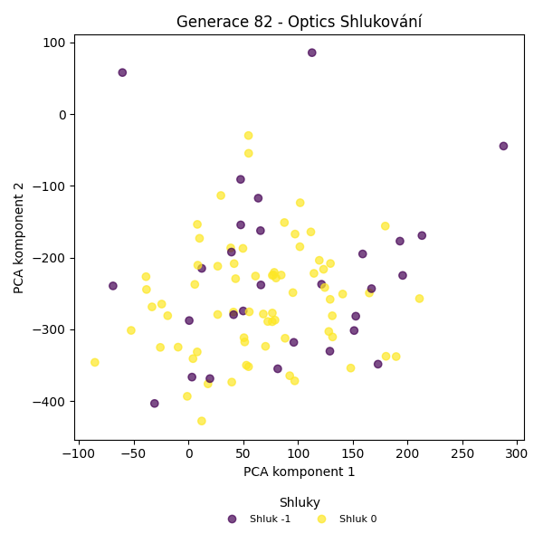
Stabilita mezi generací 81 → 82:
Shluk -1 → -1: 12 jedinců (60.0 %)
Shluk -1 → 0: 8 jedinců (40.0 %)
Shluk 0 → 0: 63 jedinců (78.8 %)
Shluk 0 → -1: 17 jedinců (21.2 %)
Jaccardovo mapování a overlap: Generace 81 → 82
- Shluk 0 → 0 (Jaccard: 0.72, Overlap: 0.89)
Posun centroidů mezi generací 81 → 82:
- Shluk 0: 34.9988
Generace 83

Stabilita mezi generací 82 → 83:
Shluk -1 → -1: 18 jedinců (62.1 %)
Shluk -1 → 0: 11 jedinců (37.9 %)
Shluk 0 → -1: 17 jedinců (23.9 %)
Shluk 0 → 0: 54 jedinců (76.1 %)
Jaccardovo mapování a overlap: Generace 82 → 83
- Shluk 0 → 0 (Jaccard: 0.66, Overlap: 0.83)
Posun centroidů mezi generací 82 → 83:
- Shluk 0: 59.0420
Generace 84

Stabilita mezi generací 83 → 84:
Shluk -1 → -1: 12 jedinců (34.3 %)
Shluk -1 → 0: 23 jedinců (65.7 %)
Shluk 0 → 0: 63 jedinců (96.9 %)
Shluk 0 → -1: 2 jedinců (3.1 %)
Jaccardovo mapování a overlap: Generace 83 → 84
- Shluk 0 → 0 (Jaccard: 0.72, Overlap: 0.97)
Posun centroidů mezi generací 83 → 84:
- Shluk 0: 70.2533
Generace 85
Stabilita mezi generací 84 → 85:
Shluk -1 → -1: 12 jedinců (85.7 %)
Shluk -1 → 0: 2 jedinců (14.3 %)
Shluk 0 → -1: 14 jedinců (16.3 %)
Shluk 0 → 0: 72 jedinců (83.7 %)
Jaccardovo mapování a overlap: Generace 84 → 85
- Shluk 0 → 0 (Jaccard: 0.82, Overlap: 0.97)
Posun centroidů mezi generací 84 → 85:
- Shluk 0: 49.5376
Generace 86

Stabilita mezi generací 85 → 86:
Shluk -1 → -1: 21 jedinců (80.8 %)
Shluk -1 → 0: 5 jedinců (19.2 %)
Shluk 0 → -1: 20 jedinců (27.0 %)
Shluk 0 → 0: 54 jedinců (73.0 %)
Jaccardovo mapování a overlap: Generace 85 → 86
- Shluk 0 → 0 (Jaccard: 0.68, Overlap: 0.92)
Posun centroidů mezi generací 85 → 86:
- Shluk 0: 75.8806
Generace 87
Stabilita mezi generací 86 → 87:
Shluk -1 → -1: 33 jedinců (80.5 %)
Shluk -1 → 0: 8 jedinců (19.5 %)
Shluk 0 → -1: 15 jedinců (25.4 %)
Shluk 0 → 0: 44 jedinců (74.6 %)
Jaccardovo mapování a overlap: Generace 86 → 87
- Shluk 0 → 0 (Jaccard: 0.66, Overlap: 0.85)
Posun centroidů mezi generací 86 → 87:
- Shluk 0: 43.5810

Generace 88

Stabilita mezi generací 87 → 88:
Shluk -1 → -1: 22 jedinců (45.8 %)
Shluk -1 → 0: 26 jedinců (54.2 %)
Shluk 0 → 0: 42 jedinců (80.8 %)
Shluk 0 → -1: 10 jedinců (19.2 %)
Jaccardovo mapování a overlap: Generace 87 → 88
- Shluk 0 → 0 (Jaccard: 0.54, Overlap: 0.81)
Posun centroidů mezi generací 87 → 88:
- Shluk 0: 62.4445
Generace 89
Stabilita mezi generací 88 → 89:
Shluk -1 → -1: 22 jedinců (68.8 %)
Shluk -1 → 0: 8 jedinců (25.0 %)
Shluk -1 → 3: 2 jedinců (6.2 %)
Shluk 0 → -1: 16 jedinců (23.5 %)
Shluk 0 → 0: 50 jedinců (73.5 %)
Shluk 0 → 3: 2 jedinců (2.9 %)
Jaccardovo mapování a overlap: Generace 88 → 89
- Shluk 0 → 0 (Jaccard: 0.66, Overlap: 0.86)
Posun centroidů mezi generací 88 → 89:
- Shluk 0: 41.9368
Generace 90
Stabilita mezi generací 89 → 90:
Shluk -1 → -1: 38 jedinců (100.0 %)
Shluk 0 → -1: 54 jedinců (93.1 %)
Shluk 0 → 0: 4 jedinců (6.9 %)
Shluk 3 → -1: 4 jedinců (100.0 %)
Jaccardovo mapování a overlap: Generace 89 → 90
- Shluk 0 → 0 (Jaccard: 0.07, Overlap: 1.00)
- Shluk 3 → žádný vhodný přechod
Posun centroidů mezi generací 89 → 90:
- Shluk 0: 105.4507
Generace 91
Stabilita mezi generací 90 → 91:
Shluk -1 → -1: 35 jedinců (36.5 %)
Shluk -1 → 0: 61 jedinců (63.5 %)
Shluk 0 → 0: 4 jedinců (100.0 %)
Jaccardovo mapování a overlap: Generace 90 → 91
- Shluk 0 → 0 (Jaccard: 0.06, Overlap: 1.00)
Posun centroidů mezi generací 90 → 91:
- Shluk 0: 105.6274
Generace 92
Stabilita mezi generací 91 → 92:
Shluk -1 → -1: 26 jedinců (74.3 %)
Shluk -1 → 0: 9 jedinců (25.7 %)
Shluk 0 → 0: 45 jedinců (69.2 %)
Shluk 0 → -1: 20 jedinců (30.8 %)
Jaccardovo mapování a overlap: Generace 91 → 92
- Shluk 0 → 0 (Jaccard: 0.61, Overlap: 0.83)
Posun centroidů mezi generací 91 → 92:
- Shluk 0: 24.3961
Generace 93

Stabilita mezi generací 92 → 93:
Shluk -1 → -1: 19 jedinců (41.3 %)
Shluk -1 → 0: 27 jedinců (58.7 %)
Shluk 0 → 0: 50 jedinců (92.6 %)
Shluk 0 → -1: 4 jedinců (7.4 %)
Jaccardovo mapování a overlap: Generace 92 → 93
- Shluk 0 → 0 (Jaccard: 0.62, Overlap: 0.93)
Posun centroidů mezi generací 92 → 93:
- Shluk 0: 29.0703
Generace 94
Stabilita mezi generací 93 → 94:
Shluk -1 → -1: 20 jedinců (87.0 %)
Shluk -1 → 0: 3 jedinců (13.0 %)
Shluk 0 → -1: 29 jedinců (37.7 %)
Shluk 0 → 0: 48 jedinců (62.3 %)
Jaccardovo mapování a overlap: Generace 93 → 94
- Shluk 0 → 0 (Jaccard: 0.60, Overlap: 0.94)
Posun centroidů mezi generací 93 → 94:
- Shluk 0: 36.1496

Generace 95
Stabilita mezi generací 94 → 95:
Shluk -1 → -1: 36 jedinců (73.5 %)
Shluk -1 → 0: 13 jedinců (26.5 %)
Shluk 0 → -1: 10 jedinců (19.6 %)
Shluk 0 → 0: 41 jedinců (80.4 %)
Jaccardovo mapování a overlap: Generace 94 → 95
- Shluk 0 → 0 (Jaccard: 0.64, Overlap: 0.80)
Posun centroidů mezi generací 94 → 95:
- Shluk 0: 24.3506
Generace 96
Stabilita mezi generací 95 → 96:
Shluk -1 → -1: 29 jedinců (63.0 %)
Shluk -1 → 0: 17 jedinců (37.0 %)
Shluk 0 → -1: 12 jedinců (22.2 %)
Shluk 0 → 0: 42 jedinců (77.8 %)
Jaccardovo mapování a overlap: Generace 95 → 96
- Shluk 0 → 0 (Jaccard: 0.59, Overlap: 0.78)
Posun centroidů mezi generací 95 → 96:
- Shluk 0: 29.4717
Generace 97
Stabilita mezi generací 96 → 97:
Shluk -1 → -1: 25 jedinců (61.0 %)
Shluk -1 → 0: 16 jedinců (39.0 %)
Shluk 0 → -1: 7 jedinců (11.9 %)
Shluk 0 → 0: 52 jedinců (88.1 %)
Jaccardovo mapování a overlap: Generace 96 → 97
- Shluk 0 → 0 (Jaccard: 0.69, Overlap: 0.88)
Posun centroidů mezi generací 96 → 97:
- Shluk 0: 39.9993
Generace 98
Stabilita mezi generací 97 → 98:
Shluk -1 → -1: 28 jedinců (87.5 %)
Shluk -1 → 0: 4 jedinců (12.5 %)
Shluk 0 → -1: 21 jedinců (30.9 %)
Shluk 0 → 0: 47 jedinců (69.1 %)
Jaccardovo mapování a overlap: Generace 97 → 98
- Shluk 0 → 0 (Jaccard: 0.65, Overlap: 0.92)
Posun centroidů mezi generací 97 → 98:
- Shluk 0: 50.6018
Generace 99
Stabilita mezi generací 98 → 99:
Shluk -1 → -1: 25 jedinců (51.0 %)
Shluk -1 → 0: 24 jedinců (49.0 %)
Shluk 0 → 0: 40 jedinců (78.4 %)
Shluk 0 → -1: 11 jedinců (21.6 %)
Jaccardovo mapování a overlap: Generace 98 → 99
- Shluk 0 → 0 (Jaccard: 0.53, Overlap: 0.78)
Posun centroidů mezi generací 98 → 99:
- Shluk 0: 33.7354
Generace 100
Stabilita mezi generací 99 → 100:
Shluk -1 → -1: 27 jedinců (75.0 %)
Shluk -1 → 0: 9 jedinců (25.0 %)
Shluk 0 → -1: 17 jedinců (26.6 %)
Shluk 0 → 0: 47 jedinců (73.4 %)
Jaccardovo mapování a overlap: Generace 99 → 100
- Shluk 0 → 0 (Jaccard: 0.64, Overlap: 0.84)
Posun centroidů mezi generací 99 → 100:
- Shluk 0: 41.9319

Generace 101
Stabilita mezi generací 100 → 101:
Shluk -1 → -1: 19 jedinců (43.2 %)
Shluk -1 → 0: 25 jedinců (56.8 %)
Shluk 0 → -1: 6 jedinců (10.7 %)
Shluk 0 → 0: 50 jedinců (89.3 %)
Jaccardovo mapování a overlap: Generace 100 → 101
- Shluk 0 → 0 (Jaccard: 0.62, Overlap: 0.89)
Posun centroidů mezi generací 100 → 101:
- Shluk 0: 21.8367
Generace 102
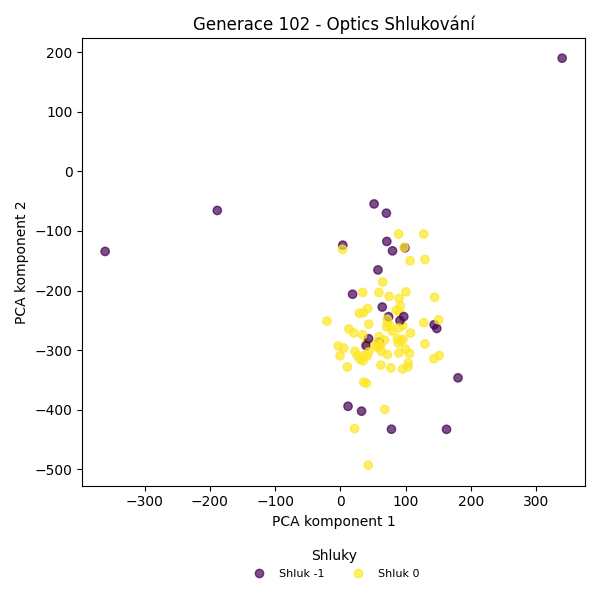
Stabilita mezi generací 101 → 102:
Shluk -1 → -1: 18 jedinců (72.0 %)
Shluk -1 → 0: 7 jedinců (28.0 %)
Shluk 0 → -1: 7 jedinců (9.3 %)
Shluk 0 → 0: 68 jedinců (90.7 %)
Jaccardovo mapování a overlap: Generace 101 → 102
- Shluk 0 → 0 (Jaccard: 0.83, Overlap: 0.91)
Posun centroidů mezi generací 101 → 102:
- Shluk 0: 34.3628
Generace 103
Stabilita mezi generací 102 → 103:
Shluk -1 → -1: 16 jedinců (64.0 %)
Shluk -1 → 0: 9 jedinců (36.0 %)
Shluk 0 → 0: 67 jedinců (89.3 %)
Shluk 0 → -1: 8 jedinců (10.7 %)
Jaccardovo mapování a overlap: Generace 102 → 103
- Shluk 0 → 0 (Jaccard: 0.80, Overlap: 0.89)
Posun centroidů mezi generací 102 → 103:
- Shluk 0: 38.7476
Generace 104
Stabilita mezi generací 103 → 104:
Shluk -1 → -1: 18 jedinců (75.0 %)
Shluk -1 → 0: 6 jedinců (25.0 %)
Shluk 0 → -1: 24 jedinců (31.6 %)
Shluk 0 → 0: 52 jedinců (68.4 %)
Jaccardovo mapování a overlap: Generace 103 → 104
- Shluk 0 → 0 (Jaccard: 0.63, Overlap: 0.90)
Posun centroidů mezi generací 103 → 104:
- Shluk 0: 39.1551
Generace 105
Stabilita mezi generací 104 → 105:
Shluk -1 → 0: 17 jedinců (40.5 %)
Shluk -1 → -1: 25 jedinců (59.5 %)
Shluk 0 → -1: 8 jedinců (13.8 %)
Shluk 0 → 0: 50 jedinců (86.2 %)
Jaccardovo mapování a overlap: Generace 104 → 105
- Shluk 0 → 0 (Jaccard: 0.67, Overlap: 0.86)
Posun centroidů mezi generací 104 → 105:
- Shluk 0: 19.5064
Generace 106
Stabilita mezi generací 105 → 106:
Shluk 0 → 0: 57 jedinců (85.1 %)
Shluk 0 → -1: 10 jedinců (14.9 %)
Shluk -1 → -1: 24 jedinců (72.7 %)
Shluk -1 → 0: 9 jedinců (27.3 %)
Jaccardovo mapování a overlap: Generace 105 → 106
- Shluk 0 → 0 (Jaccard: 0.75, Overlap: 0.86)
Posun centroidů mezi generací 105 → 106:
- Shluk 0: 36.9093
Generace 107
Stabilita mezi generací 106 → 107:
Shluk 0 → 0: 53 jedinců (80.3 %)
Shluk 0 → -1: 13 jedinců (19.7 %)
Shluk -1 → -1: 21 jedinců (61.8 %)
Shluk -1 → 0: 13 jedinců (38.2 %)
Jaccardovo mapování a overlap: Generace 106 → 107
- Shluk 0 → 0 (Jaccard: 0.67, Overlap: 0.80)
Posun centroidů mezi generací 106 → 107:
- Shluk 0: 34.8080
Generace 108
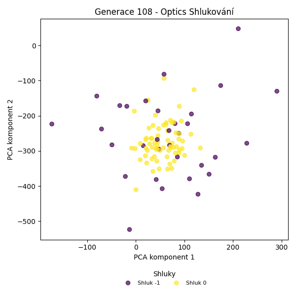
Stabilita mezi generací 107 → 108:
Shluk 0 → -1: 10 jedinců (15.2 %)
Shluk 0 → 0: 56 jedinců (84.8 %)
Shluk -1 → -1: 22 jedinců (64.7 %)
Shluk -1 → 0: 12 jedinců (35.3 %)
Jaccardovo mapování a overlap: Generace 107 → 108
- Shluk 0 → 0 (Jaccard: 0.72, Overlap: 0.85)
Posun centroidů mezi generací 107 → 108:
- Shluk 0: 26.7967
Generace 109
Stabilita mezi generací 108 → 109:
Shluk -1 → 0: 16 jedinců (50.0 %)
Shluk -1 → -1: 16 jedinců (50.0 %)
Shluk 0 → 0: 63 jedinců (92.6 %)
Shluk 0 → -1: 5 jedinců (7.4 %)
Jaccardovo mapování a overlap: Generace 108 → 109
- Shluk 0 → 0 (Jaccard: 0.75, Overlap: 0.93)
Posun centroidů mezi generací 108 → 109:
- Shluk 0: 27.9361
Generace 110
Stabilita mezi generací 109 → 110:
Shluk 0 → -1: 29 jedinců (36.7 %)
Shluk 0 → 0: 45 jedinců (57.0 %)
Shluk 0 → 4: 5 jedinců (6.3 %)
Shluk -1 → -1: 18 jedinců (85.7 %)
Shluk -1 → 0: 3 jedinců (14.3 %)
Jaccardovo mapování a overlap: Generace 109 → 110
- Shluk 0 → 0 (Jaccard: 0.55, Overlap: 0.94)
Posun centroidů mezi generací 109 → 110:
- Shluk 0: 50.4122
Generace 111
Stabilita mezi generací 110 → 111:
Shluk -1 → -1: 32 jedinců (68.1 %)
Shluk -1 → 0: 15 jedinců (31.9 %)
Shluk 0 → 0: 44 jedinců (91.7 %)
Shluk 0 → -1: 4 jedinců (8.3 %)
Shluk 4 → -1: 1 jedinců (20.0 %)
Shluk 4 → 0: 4 jedinců (80.0 %)
Jaccardovo mapování a overlap: Generace 110 → 111
- Shluk 0 → 0 (Jaccard: 0.66, Overlap: 0.92)
- Shluk 4 → 0 (Jaccard: 0.06, Overlap: 0.80)
Posun centroidů mezi generací 110 → 111:
- Shluk 0: 46.8676
Generace 112

Stabilita mezi generací 111 → 112:
Shluk -1 → -1: 22 jedinců (59.5 %)
Shluk -1 → 0: 15 jedinců (40.5 %)
Shluk 0 → 0: 57 jedinců (90.5 %)
Shluk 0 → -1: 6 jedinců (9.5 %)
Jaccardovo mapování a overlap: Generace 111 → 112
- Shluk 0 → 0 (Jaccard: 0.73, Overlap: 0.90)
Posun centroidů mezi generací 111 → 112:
- Shluk 0: 33.6594
Generace 113

Stabilita mezi generací 112 → 113:
Shluk -1 → -1: 15 jedinců (53.6 %)
Shluk -1 → 0: 13 jedinců (46.4 %)
Shluk 0 → 0: 62 jedinců (86.1 %)
Shluk 0 → -1: 10 jedinců (13.9 %)
Jaccardovo mapování a overlap: Generace 112 → 113
- Shluk 0 → 0 (Jaccard: 0.73, Overlap: 0.86)
Posun centroidů mezi generací 112 → 113:
- Shluk 0: 29.7155
Generace 114
Stabilita mezi generací 113 → 114:
Shluk -1 → -1: 18 jedinců (72.0 %)
Shluk -1 → 0: 7 jedinců (28.0 %)
Shluk 0 → 0: 59 jedinců (78.7 %)
Shluk 0 → -1: 16 jedinců (21.3 %)
Jaccardovo mapování a overlap: Generace 113 → 114
- Shluk 0 → 0 (Jaccard: 0.72, Overlap: 0.89)
Posun centroidů mezi generací 113 → 114:
- Shluk 0: 31.9860
Generace 115
Stabilita mezi generací 114 → 115:
Shluk -1 → -1: 24 jedinců (70.6 %)
Shluk -1 → 0: 10 jedinců (29.4 %)
Shluk 0 → -1: 15 jedinců (22.7 %)
Shluk 0 → 0: 51 jedinců (77.3 %)
Jaccardovo mapování a overlap: Generace 114 → 115
- Shluk 0 → 0 (Jaccard: 0.67, Overlap: 0.84)
Posun centroidů mezi generací 114 → 115:
- Shluk 0: 22.4381
Generace 116
Stabilita mezi generací 115 → 116:
Shluk -1 → -1: 17 jedinců (43.6 %)
Shluk -1 → 0: 22 jedinců (56.4 %)
Shluk 0 → -1: 7 jedinců (11.5 %)
Shluk 0 → 0: 54 jedinců (88.5 %)
Jaccardovo mapování a overlap: Generace 115 → 116
- Shluk 0 → 0 (Jaccard: 0.65, Overlap: 0.89)
Posun centroidů mezi generací 115 → 116:
- Shluk 0: 28.0256
Generace 117
Stabilita mezi generací 116 → 117:
Shluk -1 → -1: 21 jedinců (87.5 %)
Shluk -1 → 0: 3 jedinců (12.5 %)
Shluk 0 → 0: 48 jedinců (63.2 %)
Shluk 0 → -1: 28 jedinců (36.8 %)
Jaccardovo mapování a overlap: Generace 116 → 117
- Shluk 0 → 0 (Jaccard: 0.61, Overlap: 0.94)
Posun centroidů mezi generací 116 → 117:
- Shluk 0: 35.9718
Generace 118
Stabilita mezi generací 117 → 118:
Shluk -1 → -1: 24 jedinců (49.0 %)
Shluk -1 → 0: 25 jedinců (51.0 %)
Shluk 0 → 0: 48 jedinců (94.1 %)
Shluk 0 → -1: 3 jedinců (5.9 %)
Jaccardovo mapování a overlap: Generace 117 → 118
- Shluk 0 → 0 (Jaccard: 0.63, Overlap: 0.94)
Posun centroidů mezi generací 117 → 118:
- Shluk 0: 25.8013
Generace 119
Stabilita mezi generací 118 → 119:
Shluk -1 → -1: 20 jedinců (74.1 %)
Shluk -1 → 0: 7 jedinců (25.9 %)
Shluk 0 → -1: 14 jedinců (19.2 %)
Shluk 0 → 0: 59 jedinců (80.8 %)
Jaccardovo mapování a overlap: Generace 118 → 119
- Shluk 0 → 0 (Jaccard: 0.74, Overlap: 0.89)
Posun centroidů mezi generací 118 → 119:
- Shluk 0: 19.5478
Generace 120
Stabilita mezi generací 119 → 120:
Shluk -1 → -1: 25 jedinců (73.5 %)
Shluk -1 → 0: 9 jedinců (26.5 %)
Shluk 0 → -1: 18 jedinců (27.3 %)
Shluk 0 → 0: 48 jedinců (72.7 %)
Jaccardovo mapování a overlap: Generace 119 → 120
- Shluk 0 → 0 (Jaccard: 0.64, Overlap: 0.84)
Posun centroidů mezi generací 119 → 120:
- Shluk 0: 33.0519
Generace 121
Stabilita mezi generací 120 → 121:
Shluk -1 → -1: 29 jedinců (67.4 %)
Shluk -1 → 0: 13 jedinců (30.2 %)
Shluk -1 → 5: 1 jedinců (2.3 %)
Shluk 0 → -1: 11 jedinců (19.3 %)
Shluk 0 → 0: 41 jedinců (71.9 %)
Shluk 0 → 5: 5 jedinců (8.8 %)
Jaccardovo mapování a overlap: Generace 120 → 121
- Shluk 0 → 0 (Jaccard: 0.59, Overlap: 0.76)
Posun centroidů mezi generací 120 → 121:
- Shluk 0: 40.5763
Generace 122
Stabilita mezi generací 121 → 122:
Shluk -1 → -1: 40 jedinců (100.0 %)
Shluk 0 → -1: 48 jedinců (88.9 %)
Shluk 0 → 0: 6 jedinců (11.1 %)
Shluk 5 → -1: 6 jedinců (100.0 %)
Jaccardovo mapování a overlap: Generace 121 → 122
- Shluk 0 → 0 (Jaccard: 0.11, Overlap: 1.00)
- Shluk 5 → žádný vhodný přechod
Posun centroidů mezi generací 121 → 122:
- Shluk 0: 27.1666
Generace 123
Stabilita mezi generací 122 → 123:
Shluk -1 → -1: 40 jedinců (42.6 %)
Shluk -1 → 0: 54 jedinců (57.4 %)
Shluk 0 → 0: 6 jedinců (100.0 %)
Jaccardovo mapování a overlap: Generace 122 → 123
- Shluk 0 → 0 (Jaccard: 0.10, Overlap: 1.00)
Posun centroidů mezi generací 122 → 123:
- Shluk 0: 25.5310
Generace 124
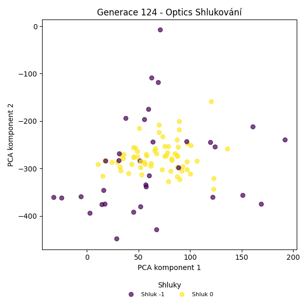
Stabilita mezi generací 123 → 124:
Shluk -1 → -1: 21 jedinců (52.5 %)
Shluk -1 → 0: 19 jedinců (47.5 %)
Shluk 0 → -1: 13 jedinců (21.7 %)
Shluk 0 → 0: 47 jedinců (78.3 %)
Jaccardovo mapování a overlap: Generace 123 → 124
- Shluk 0 → 0 (Jaccard: 0.59, Overlap: 0.78)
Posun centroidů mezi generací 123 → 124:
- Shluk 0: 44.0991
Generace 125
Stabilita mezi generací 124 → 125:
Shluk -1 → 0: 13 jedinců (38.2 %)
Shluk -1 → -1: 21 jedinců (61.8 %)
Shluk 0 → -1: 12 jedinců (18.2 %)
Shluk 0 → 0: 54 jedinců (81.8 %)
Jaccardovo mapování a overlap: Generace 124 → 125
- Shluk 0 → 0 (Jaccard: 0.68, Overlap: 0.82)
Posun centroidů mezi generací 124 → 125:
- Shluk 0: 37.9482
Generace 126
Stabilita mezi generací 125 → 126:
Shluk 0 → -1: 5 jedinců (7.5 %)
Shluk 0 → 0: 62 jedinců (92.5 %)
Shluk -1 → -1: 15 jedinců (45.5 %)
Shluk -1 → 0: 18 jedinců (54.5 %)
Jaccardovo mapování a overlap: Generace 125 → 126
- Shluk 0 → 0 (Jaccard: 0.73, Overlap: 0.93)
Posun centroidů mezi generací 125 → 126:
- Shluk 0: 22.8462
Generace 127
Stabilita mezi generací 126 → 127:
Shluk -1 → 0: 6 jedinců (30.0 %)
Shluk -1 → -1: 14 jedinců (70.0 %)
Shluk 0 → 0: 56 jedinců (70.0 %)
Shluk 0 → -1: 24 jedinců (30.0 %)
Jaccardovo mapování a overlap: Generace 126 → 127
- Shluk 0 → 0 (Jaccard: 0.65, Overlap: 0.90)
Posun centroidů mezi generací 126 → 127:
- Shluk 0: 18.4816
Generace 128
Stabilita mezi generací 127 → 128:
Shluk 0 → -1: 56 jedinců (90.3 %)
Shluk 0 → 0: 6 jedinců (9.7 %)
Shluk -1 → -1: 38 jedinců (100.0 %)
Jaccardovo mapování a overlap: Generace 127 → 128
- Shluk 0 → 0 (Jaccard: 0.10, Overlap: 1.00)
Posun centroidů mezi generací 127 → 128:
- Shluk 0: 22.2895
Generace 129
Stabilita mezi generací 128 → 129:
Shluk -1 → -1: 26 jedinců (27.7 %)
Shluk -1 → 0: 68 jedinců (72.3 %)
Shluk 0 → 0: 6 jedinců (100.0 %)
Jaccardovo mapování a overlap: Generace 128 → 129
- Shluk 0 → 0 (Jaccard: 0.08, Overlap: 1.00)
Posun centroidů mezi generací 128 → 129:
- Shluk 0: 17.1236
Generace 130
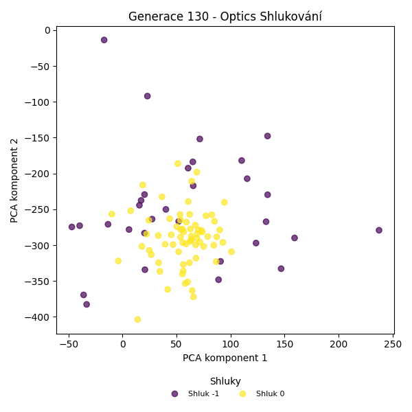
Stabilita mezi generací 129 → 130:
Shluk -1 → -1: 21 jedinců (80.8 %)
Shluk -1 → 0: 5 jedinců (19.2 %)
Shluk 0 → -1: 10 jedinců (13.5 %)
Shluk 0 → 0: 64 jedinců (86.5 %)
Jaccardovo mapování a overlap: Generace 129 → 130
- Shluk 0 → 0 (Jaccard: 0.81, Overlap: 0.93)
Posun centroidů mezi generací 129 → 130:
- Shluk 0: 22.3211
Generace 131
Stabilita mezi generací 130 → 131:
Shluk -1 → -1: 24 jedinců (77.4 %)
Shluk -1 → 0: 7 jedinců (22.6 %)
Shluk 0 → 0: 55 jedinců (79.7 %)
Shluk 0 → -1: 14 jedinců (20.3 %)
Jaccardovo mapování a overlap: Generace 130 → 131
- Shluk 0 → 0 (Jaccard: 0.72, Overlap: 0.89)
Posun centroidů mezi generací 130 → 131:
- Shluk 0: 10.7456
Generace 132
Stabilita mezi generací 131 → 132:
Shluk -1 → 0: 27 jedinců (71.1 %)
Shluk -1 → -1: 11 jedinců (28.9 %)
Shluk 0 → 0: 62 jedinců (100.0 %)
Jaccardovo mapování a overlap: Generace 131 → 132
- Shluk 0 → 0 (Jaccard: 0.70, Overlap: 1.00)
Posun centroidů mezi generací 131 → 132:
- Shluk 0: 25.7372
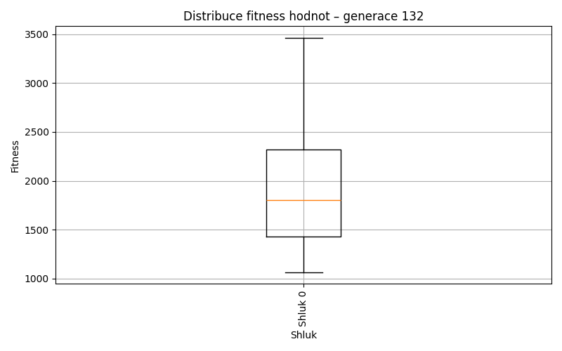
Generace 133
Stabilita mezi generací 132 → 133:
Shluk 0 → -1: 17 jedinců (19.1 %)
Shluk 0 → 0: 72 jedinců (80.9 %)
Shluk -1 → -1: 8 jedinců (72.7 %)
Shluk -1 → 0: 3 jedinců (27.3 %)
Jaccardovo mapování a overlap: Generace 132 → 133
- Shluk 0 → 0 (Jaccard: 0.78, Overlap: 0.96)
Posun centroidů mezi generací 132 → 133:
- Shluk 0: 16.3300
Generace 134
Stabilita mezi generací 133 → 134:
Shluk -1 → -1: 16 jedinců (64.0 %)
Shluk -1 → 0: 9 jedinců (36.0 %)
Shluk 0 → 0: 61 jedinců (81.3 %)
Shluk 0 → -1: 14 jedinců (18.7 %)
Jaccardovo mapování a overlap: Generace 133 → 134
- Shluk 0 → 0 (Jaccard: 0.73, Overlap: 0.87)
Posun centroidů mezi generací 133 → 134:
- Shluk 0: 12.2354
Generace 135
Stabilita mezi generací 134 → 135:
Shluk -1 → -1: 21 jedinců (70.0 %)
Shluk -1 → 0: 9 jedinců (30.0 %)
Shluk 0 → -1: 20 jedinců (28.6 %)
Shluk 0 → 0: 50 jedinců (71.4 %)
Jaccardovo mapování a overlap: Generace 134 → 135
- Shluk 0 → 0 (Jaccard: 0.63, Overlap: 0.85)
Posun centroidů mezi generací 134 → 135:
- Shluk 0: 38.4863
Generace 136
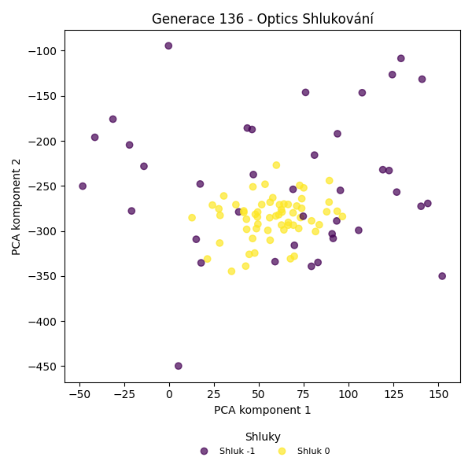
Stabilita mezi generací 135 → 136:
Shluk -1 → -1: 26 jedinců (63.4 %)
Shluk -1 → 0: 15 jedinců (36.6 %)
Shluk 0 → -1: 13 jedinců (22.0 %)
Shluk 0 → 0: 46 jedinců (78.0 %)
Jaccardovo mapování a overlap: Generace 135 → 136
- Shluk 0 → 0 (Jaccard: 0.62, Overlap: 0.78)
Posun centroidů mezi generací 135 → 136:
- Shluk 0: 22.0935
Generace 137
Stabilita mezi generací 136 → 137:
Shluk -1 → -1: 25 jedinců (64.1 %)
Shluk -1 → 0: 14 jedinců (35.9 %)
Shluk 0 → 0: 55 jedinců (90.2 %)
Shluk 0 → -1: 6 jedinců (9.8 %)
Jaccardovo mapování a overlap: Generace 136 → 137
- Shluk 0 → 0 (Jaccard: 0.73, Overlap: 0.90)
Posun centroidů mezi generací 136 → 137:
- Shluk 0: 16.9193
Generace 138

Stabilita mezi generací 137 → 138:
Shluk -1 → -1: 22 jedinců (71.0 %)
Shluk -1 → 0: 9 jedinců (29.0 %)
Shluk 0 → -1: 9 jedinců (13.0 %)
Shluk 0 → 0: 60 jedinců (87.0 %)
Jaccardovo mapování a overlap: Generace 137 → 138
- Shluk 0 → 0 (Jaccard: 0.77, Overlap: 0.87)
Posun centroidů mezi generací 137 → 138:
- Shluk 0: 22.1130
Generace 139
Stabilita mezi generací 138 → 139:
Shluk -1 → 0: 17 jedinců (54.8 %)
Shluk -1 → -1: 14 jedinců (45.2 %)
Shluk 0 → 0: 64 jedinců (92.8 %)
Shluk 0 → -1: 5 jedinců (7.2 %)
Jaccardovo mapování a overlap: Generace 138 → 139
- Shluk 0 → 0 (Jaccard: 0.74, Overlap: 0.93)
Posun centroidů mezi generací 138 → 139:
- Shluk 0: 18.0414
Generace 140
Stabilita mezi generací 139 → 140:
Shluk 0 → 0: 63 jedinců (77.8 %)
Shluk 0 → -1: 18 jedinců (22.2 %)
Shluk -1 → -1: 16 jedinců (84.2 %)
Shluk -1 → 0: 3 jedinců (15.8 %)
Jaccardovo mapování a overlap: Generace 139 → 140
- Shluk 0 → 0 (Jaccard: 0.75, Overlap: 0.95)
Posun centroidů mezi generací 139 → 140:
- Shluk 0: 21.5525
Generace 141
Stabilita mezi generací 140 → 141:
Shluk 0 → 0: 55 jedinců (83.3 %)
Shluk 0 → -1: 11 jedinců (16.7 %)
Shluk -1 → -1: 27 jedinců (79.4 %)
Shluk -1 → 0: 7 jedinců (20.6 %)
Jaccardovo mapování a overlap: Generace 140 → 141
- Shluk 0 → 0 (Jaccard: 0.75, Overlap: 0.89)
Posun centroidů mezi generací 140 → 141:
- Shluk 0: 16.9243
Generace 142
Stabilita mezi generací 141 → 142:
Shluk 0 → -1: 14 jedinců (22.6 %)
Shluk 0 → 0: 48 jedinců (77.4 %)
Shluk -1 → -1: 32 jedinců (84.2 %)
Shluk -1 → 0: 6 jedinců (15.8 %)
Jaccardovo mapování a overlap: Generace 141 → 142
- Shluk 0 → 0 (Jaccard: 0.71, Overlap: 0.89)
Posun centroidů mezi generací 141 → 142:
- Shluk 0: 13.0479
Generace 143

Stabilita mezi generací 142 → 143:
Shluk -1 → -1: 38 jedinců (82.6 %)
Shluk -1 → 0: 8 jedinců (17.4 %)
Shluk 0 → -1: 9 jedinců (16.7 %)
Shluk 0 → 0: 45 jedinců (83.3 %)
Jaccardovo mapování a overlap: Generace 142 → 143
- Shluk 0 → 0 (Jaccard: 0.73, Overlap: 0.85)
Posun centroidů mezi generací 142 → 143:
- Shluk 0: 12.1803
Generace 144
Stabilita mezi generací 143 → 144:
Shluk -1 → -1: 37 jedinců (78.7 %)
Shluk -1 → 0: 10 jedinců (21.3 %)
Shluk 0 → 0: 44 jedinců (83.0 %)
Shluk 0 → -1: 9 jedinců (17.0 %)
Jaccardovo mapování a overlap: Generace 143 → 144
- Shluk 0 → 0 (Jaccard: 0.70, Overlap: 0.83)
Posun centroidů mezi generací 143 → 144:
- Shluk 0: 8.6191
Generace 145
Stabilita mezi generací 144 → 145:
Shluk -1 → -1: 39 jedinců (84.8 %)
Shluk -1 → 0: 7 jedinců (15.2 %)
Shluk 0 → 0: 46 jedinců (85.2 %)
Shluk 0 → -1: 8 jedinců (14.8 %)
Jaccardovo mapování a overlap: Generace 144 → 145
- Shluk 0 → 0 (Jaccard: 0.75, Overlap: 0.87)
Posun centroidů mezi generací 144 → 145:
- Shluk 0: 12.5505
Generace 146
Stabilita mezi generací 145 → 146:
Shluk -1 → 0: 12 jedinců (25.5 %)
Shluk -1 → -1: 35 jedinců (74.5 %)
Shluk 0 → 0: 51 jedinců (96.2 %)
Shluk 0 → -1: 2 jedinců (3.8 %)
Jaccardovo mapování a overlap: Generace 145 → 146
- Shluk 0 → 0 (Jaccard: 0.78, Overlap: 0.96)
Posun centroidů mezi generací 145 → 146:
- Shluk 0: 13.2051
Generace 147
Stabilita mezi generací 146 → 147:
Shluk 0 → -1: 16 jedinců (25.4 %)
Shluk 0 → 0: 47 jedinců (74.6 %)
Shluk -1 → 0: 6 jedinců (16.2 %)
Shluk -1 → -1: 31 jedinců (83.8 %)
Jaccardovo mapování a overlap: Generace 146 → 147
- Shluk 0 → 0 (Jaccard: 0.68, Overlap: 0.89)
Posun centroidů mezi generací 146 → 147:
- Shluk 0: 16.2002
Generace 148
Stabilita mezi generací 147 → 148:
Shluk -1 → -1: 27 jedinců (57.4 %)
Shluk -1 → 0: 20 jedinců (42.6 %)
Shluk 0 → -1: 2 jedinců (3.8 %)
Shluk 0 → 0: 51 jedinců (96.2 %)
Jaccardovo mapování a overlap: Generace 147 → 148
- Shluk 0 → 0 (Jaccard: 0.70, Overlap: 0.96)
Posun centroidů mezi generací 147 → 148:
- Shluk 0: 17.8228
Generace 149
Stabilita mezi generací 148 → 149:
Shluk -1 → 0: 8 jedinců (27.6 %)
Shluk -1 → -1: 21 jedinců (72.4 %)
Shluk 0 → 0: 54 jedinců (76.1 %)
Shluk 0 → -1: 17 jedinců (23.9 %)
Jaccardovo mapování a overlap: Generace 148 → 149
- Shluk 0 → 0 (Jaccard: 0.68, Overlap: 0.87)
Posun centroidů mezi generací 148 → 149:
- Shluk 0: 15.2522
Generace 150
Stabilita mezi generací 149 → 150:
Shluk 0 → -1: 9 jedinců (14.5 %)
Shluk 0 → 0: 53 jedinců (85.5 %)
Shluk -1 → -1: 30 jedinců (78.9 %)
Shluk -1 → 0: 8 jedinců (21.1 %)
Jaccardovo mapování a overlap: Generace 149 → 150
- Shluk 0 → 0 (Jaccard: 0.76, Overlap: 0.87)
Posun centroidů mezi generací 149 → 150:
- Shluk 0: 15.6365
Generace 151
Stabilita mezi generací 150 → 151:
Shluk -1 → -1: 31 jedinců (79.5 %)
Shluk -1 → 0: 8 jedinců (20.5 %)
Shluk 0 → 0: 47 jedinců (77.0 %)
Shluk 0 → -1: 14 jedinců (23.0 %)
Jaccardovo mapování a overlap: Generace 150 → 151
- Shluk 0 → 0 (Jaccard: 0.68, Overlap: 0.85)
Posun centroidů mezi generací 150 → 151:
- Shluk 0: 19.9481
Generace 152
Stabilita mezi generací 151 → 152:
Shluk -1 → 0: 13 jedinců (28.9 %)
Shluk -1 → -1: 32 jedinců (71.1 %)
Shluk 0 → 0: 43 jedinců (78.2 %)
Shluk 0 → -1: 12 jedinců (21.8 %)
Jaccardovo mapování a overlap: Generace 151 → 152
- Shluk 0 → 0 (Jaccard: 0.63, Overlap: 0.78)
Posun centroidů mezi generací 151 → 152:
- Shluk 0: 9.1550
Generace 153
Stabilita mezi generací 152 → 153:
Shluk 0 → 6: 3 jedinců (5.4 %)
Shluk 0 → 0: 51 jedinců (91.1 %)
Shluk 0 → -1: 2 jedinců (3.6 %)
Shluk -1 → -1: 28 jedinců (63.6 %)
Shluk -1 → 0: 15 jedinců (34.1 %)
Shluk -1 → 6: 1 jedinců (2.3 %)
Jaccardovo mapování a overlap: Generace 152 → 153
- Shluk 0 → 0 (Jaccard: 0.72, Overlap: 0.91)
Posun centroidů mezi generací 152 → 153:
- Shluk 0: 98.2596
Generace 154
Stabilita mezi generací 153 → 154:
Shluk 6 → -1: 2 jedinců (50.0 %)
Shluk 6 → 0: 2 jedinců (50.0 %)
Shluk -1 → -1: 29 jedinců (96.7 %)
Shluk -1 → 0: 1 jedinců (3.3 %)
Shluk 0 → 0: 48 jedinců (72.7 %)
Shluk 0 → -1: 18 jedinců (27.3 %)
Jaccardovo mapování a overlap: Generace 153 → 154
- Shluk 6 → 0 (Jaccard: 0.04, Overlap: 0.50)
- Shluk 0 → 0 (Jaccard: 0.70, Overlap: 0.94)
Posun centroidů mezi generací 153 → 154:
- Shluk 0: 98.7207
Generace 155
Stabilita mezi generací 154 → 155:
Shluk -1 → -1: 34 jedinců (69.4 %)
Shluk -1 → 0: 15 jedinců (30.6 %)
Shluk 0 → 0: 42 jedinců (82.4 %)
Shluk 0 → -1: 9 jedinců (17.6 %)
Jaccardovo mapování a overlap: Generace 154 → 155
- Shluk 0 → 0 (Jaccard: 0.64, Overlap: 0.82)
Posun centroidů mezi generací 154 → 155:
- Shluk 0: 7.5887
Generace 156

Stabilita mezi generací 155 → 156:
Shluk -1 → 0: 11 jedinců (25.6 %)
Shluk -1 → -1: 32 jedinců (74.4 %)
Shluk 0 → 0: 49 jedinců (86.0 %)
Shluk 0 → -1: 8 jedinců (14.0 %)
Jaccardovo mapování a overlap: Generace 155 → 156
- Shluk 0 → 0 (Jaccard: 0.72, Overlap: 0.86)
Posun centroidů mezi generací 155 → 156:
- Shluk 0: 9.6759
Generace 157
Stabilita mezi generací 156 → 157:
Shluk 0 → -1: 57 jedinců (95.0 %)
Shluk 0 → 0: 3 jedinců (5.0 %)
Shluk -1 → -1: 39 jedinců (97.5 %)
Shluk -1 → 0: 1 jedinců (2.5 %)
Jaccardovo mapování a overlap: Generace 156 → 157
- Shluk 0 → 0 (Jaccard: 0.05, Overlap: 0.75)
Posun centroidů mezi generací 156 → 157:
- Shluk 0: 24.4235
Generace 158
Stabilita mezi generací 157 → 158:
Shluk -1 → -1: 31 jedinců (32.3 %)
Shluk -1 → 0: 65 jedinců (67.7 %)
Shluk 0 → -1: 1 jedinců (25.0 %)
Shluk 0 → 0: 3 jedinců (75.0 %)
Jaccardovo mapování a overlap: Generace 157 → 158
- Shluk 0 → 0 (Jaccard: 0.04, Overlap: 0.75)
Posun centroidů mezi generací 157 → 158:
- Shluk 0: 20.4771
Generace 159

Stabilita mezi generací 158 → 159:
Shluk -1 → -1: 23 jedinců (71.9 %)
Shluk -1 → 0: 9 jedinců (28.1 %)
Shluk 0 → 0: 52 jedinců (76.5 %)
Shluk 0 → -1: 16 jedinců (23.5 %)
Jaccardovo mapování a overlap: Generace 158 → 159
- Shluk 0 → 0 (Jaccard: 0.68, Overlap: 0.85)
Posun centroidů mezi generací 158 → 159:
- Shluk 0: 11.6429
Generace 160

Stabilita mezi generací 159 → 160:
Shluk -1 → -1: 31 jedinců (79.5 %)
Shluk -1 → 0: 8 jedinců (20.5 %)
Shluk 0 → 0: 46 jedinců (75.4 %)
Shluk 0 → -1: 15 jedinců (24.6 %)
Jaccardovo mapování a overlap: Generace 159 → 160
- Shluk 0 → 0 (Jaccard: 0.67, Overlap: 0.85)
Posun centroidů mezi generací 159 → 160:
- Shluk 0: 13.8943
Generace 161
Stabilita mezi generací 160 → 161:
Shluk -1 → -1: 32 jedinců (69.6 %)
Shluk -1 → 0: 14 jedinců (30.4 %)
Shluk 0 → 0: 48 jedinců (88.9 %)
Shluk 0 → -1: 6 jedinců (11.1 %)
Jaccardovo mapování a overlap: Generace 160 → 161
- Shluk 0 → 0 (Jaccard: 0.71, Overlap: 0.89)
Posun centroidů mezi generací 160 → 161:
- Shluk 0: 9.6953
Generace 162
Stabilita mezi generací 161 → 162:
Shluk -1 → -1: 26 jedinců (68.4 %)
Shluk -1 → 0: 12 jedinců (31.6 %)
Shluk 0 → 0: 53 jedinců (85.5 %)
Shluk 0 → -1: 9 jedinců (14.5 %)
Jaccardovo mapování a overlap: Generace 161 → 162
- Shluk 0 → 0 (Jaccard: 0.72, Overlap: 0.85)
Posun centroidů mezi generací 161 → 162:
- Shluk 0: 7.7997
Generace 163
Stabilita mezi generací 162 → 163:
Shluk -1 → 0: 11 jedinců (31.4 %)
Shluk -1 → -1: 24 jedinců (68.6 %)
Shluk 0 → 0: 59 jedinců (90.8 %)
Shluk 0 → -1: 6 jedinců (9.2 %)
Jaccardovo mapování a overlap: Generace 162 → 163
- Shluk 0 → 0 (Jaccard: 0.78, Overlap: 0.91)
Posun centroidů mezi generací 162 → 163:
- Shluk 0: 8.2663
Generace 164
Stabilita mezi generací 163 → 164:
Shluk 0 → -1: 5 jedinců (7.1 %)
Shluk 0 → 0: 65 jedinců (92.9 %)
Shluk -1 → -1: 21 jedinců (70.0 %)
Shluk -1 → 0: 9 jedinců (30.0 %)
Jaccardovo mapování a overlap: Generace 163 → 164
- Shluk 0 → 0 (Jaccard: 0.82, Overlap: 0.93)
Posun centroidů mezi generací 163 → 164:
- Shluk 0: 5.2478
Generace 165
Stabilita mezi generací 164 → 165:
Shluk -1 → 0: 5 jedinců (19.2 %)
Shluk -1 → -1: 21 jedinců (80.8 %)
Shluk 0 → -1: 15 jedinců (20.3 %)
Shluk 0 → 0: 59 jedinců (79.7 %)
Jaccardovo mapování a overlap: Generace 164 → 165
- Shluk 0 → 0 (Jaccard: 0.75, Overlap: 0.92)
Posun centroidů mezi generací 164 → 165:
- Shluk 0: 11.3625
Generace 166
Stabilita mezi generací 165 → 166:
Shluk 0 → -1: 15 jedinců (23.4 %)
Shluk 0 → 0: 49 jedinců (76.6 %)
Shluk -1 → -1: 32 jedinců (88.9 %)
Shluk -1 → 0: 4 jedinců (11.1 %)
Jaccardovo mapování a overlap: Generace 165 → 166
- Shluk 0 → 0 (Jaccard: 0.72, Overlap: 0.92)
Posun centroidů mezi generací 165 → 166:
- Shluk 0: 10.8006
Generace 167
Stabilita mezi generací 166 → 167:
Shluk -1 → -1: 38 jedinců (80.9 %)
Shluk -1 → 0: 9 jedinců (19.1 %)
Shluk 0 → 0: 43 jedinců (81.1 %)
Shluk 0 → -1: 10 jedinců (18.9 %)
Jaccardovo mapování a overlap: Generace 166 → 167
- Shluk 0 → 0 (Jaccard: 0.69, Overlap: 0.83)
Posun centroidů mezi generací 166 → 167:
- Shluk 0: 7.6068
Generace 168
Stabilita mezi generací 167 → 168:
Shluk -1 → 0: 19 jedinců (39.6 %)
Shluk -1 → -1: 29 jedinců (60.4 %)
Shluk 0 → 0: 48 jedinců (92.3 %)
Shluk 0 → -1: 4 jedinců (7.7 %)
Jaccardovo mapování a overlap: Generace 167 → 168
- Shluk 0 → 0 (Jaccard: 0.68, Overlap: 0.92)
Posun centroidů mezi generací 167 → 168:
- Shluk 0: 4.0436
Generace 169
Stabilita mezi generací 168 → 169:
Shluk 0 → -1: 20 jedinců (29.9 %)
Shluk 0 → 0: 47 jedinců (70.1 %)
Shluk -1 → -1: 29 jedinců (87.9 %)
Shluk -1 → 0: 4 jedinců (12.1 %)
Jaccardovo mapování a overlap: Generace 168 → 169
- Shluk 0 → 0 (Jaccard: 0.66, Overlap: 0.92)
Posun centroidů mezi generací 168 → 169:
- Shluk 0: 8.6881
Generace 170
Stabilita mezi generací 169 → 170:
Shluk -1 → 0: 9 jedinců (18.4 %)
Shluk -1 → -1: 40 jedinců (81.6 %)
Shluk 0 → 0: 42 jedinců (82.4 %)
Shluk 0 → -1: 9 jedinců (17.6 %)
Jaccardovo mapování a overlap: Generace 169 → 170
- Shluk 0 → 0 (Jaccard: 0.70, Overlap: 0.82)
Posun centroidů mezi generací 169 → 170:
- Shluk 0: 7.6598
Generace 171

Stabilita mezi generací 170 → 171:
Shluk 0 → 0: 49 jedinců (96.1 %)
Shluk 0 → -1: 2 jedinců (3.9 %)
Shluk -1 → -1: 25 jedinců (51.0 %)
Shluk -1 → 0: 24 jedinců (49.0 %)
Jaccardovo mapování a overlap: Generace 170 → 171
- Shluk 0 → 0 (Jaccard: 0.65, Overlap: 0.96)
Posun centroidů mezi generací 170 → 171:
- Shluk 0: 153.5204
Generace 172
Stabilita mezi generací 171 → 172:
Shluk 0 → -1: 59 jedinců (80.8 %)
Shluk 0 → 0: 14 jedinců (19.2 %)
Shluk -1 → -1: 25 jedinců (92.6 %)
Shluk -1 → 0: 2 jedinců (7.4 %)
Jaccardovo mapování a overlap: Generace 171 → 172
- Shluk 0 → 0 (Jaccard: 0.19, Overlap: 0.88)
Posun centroidů mezi generací 171 → 172:
- Shluk 0: 143.2416
Generace 173
Stabilita mezi generací 172 → 173:
Shluk -1 → -1: 78 jedinců (92.9 %)
Shluk -1 → 0: 6 jedinců (7.1 %)
Shluk 0 → 0: 3 jedinců (18.8 %)
Shluk 0 → -1: 13 jedinců (81.2 %)
Jaccardovo mapování a overlap: Generace 172 → 173
- Shluk 0 → 0 (Jaccard: 0.14, Overlap: 0.33)
Posun centroidů mezi generací 172 → 173:
- Shluk 0: 25.7620
Generace 174
Stabilita mezi generací 173 → 174:
Shluk -1 → 0: 66 jedinců (72.5 %)
Shluk -1 → -1: 25 jedinců (27.5 %)
Shluk 0 → 0: 9 jedinců (100.0 %)
Jaccardovo mapování a overlap: Generace 173 → 174
- Shluk 0 → 0 (Jaccard: 0.12, Overlap: 1.00)
Posun centroidů mezi generací 173 → 174:
- Shluk 0: 155.4299
Generace 175
Stabilita mezi generací 174 → 175:
Shluk 0 → 0: 49 jedinců (65.3 %)
Shluk 0 → -1: 26 jedinců (34.7 %)
Shluk -1 → -1: 23 jedinců (92.0 %)
Shluk -1 → 0: 2 jedinců (8.0 %)
Jaccardovo mapování a overlap: Generace 174 → 175
- Shluk 0 → 0 (Jaccard: 0.64, Overlap: 0.96)
Posun centroidů mezi generací 174 → 175:
- Shluk 0: 18.3236
Generace 176
Stabilita mezi generací 175 → 176:
Shluk 0 → 0: 50 jedinců (98.0 %)
Shluk 0 → -1: 1 jedinců (2.0 %)
Shluk -1 → -1: 27 jedinců (55.1 %)
Shluk -1 → 0: 22 jedinců (44.9 %)
Jaccardovo mapování a overlap: Generace 175 → 176
- Shluk 0 → 0 (Jaccard: 0.68, Overlap: 0.98)
Posun centroidů mezi generací 175 → 176:
- Shluk 0: 36.0838
Generace 177
Stabilita mezi generací 176 → 177:
Shluk 0 → -1: 21 jedinců (29.2 %)
Shluk 0 → 0: 44 jedinců (61.1 %)
Shluk 0 → 7: 7 jedinců (9.7 %)
Shluk -1 → -1: 19 jedinců (67.9 %)
Shluk -1 → 0: 9 jedinců (32.1 %)
Jaccardovo mapování a overlap: Generace 176 → 177
- Shluk 0 → 0 (Jaccard: 0.54, Overlap: 0.83)
Posun centroidů mezi generací 176 → 177:
- Shluk 0: 14.5905
Generace 178
Stabilita mezi generací 177 → 178:
Shluk -1 → -1: 40 jedinců (100.0 %)
Shluk 0 → -1: 49 jedinců (92.5 %)
Shluk 0 → 0: 4 jedinců (7.5 %)
Shluk 7 → -1: 7 jedinců (100.0 %)
Jaccardovo mapování a overlap: Generace 177 → 178
- Shluk 0 → 0 (Jaccard: 0.08, Overlap: 1.00)
- Shluk 7 → žádný vhodný přechod
Posun centroidů mezi generací 177 → 178:
- Shluk 0: 65.0005
Generace 179
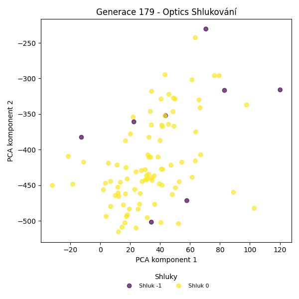
Stabilita mezi generací 178 → 179:
Shluk -1 → 0: 88 jedinců (91.7 %)
Shluk -1 → -1: 8 jedinců (8.3 %)
Shluk 0 → 0: 4 jedinců (100.0 %)
Jaccardovo mapování a overlap: Generace 178 → 179
- Shluk 0 → 0 (Jaccard: 0.04, Overlap: 1.00)
Posun centroidů mezi generací 178 → 179:
- Shluk 0: 61.9568
Generace 180
Stabilita mezi generací 179 → 180:
Shluk 0 → -1: 31 jedinců (33.7 %)
Shluk 0 → 0: 61 jedinců (66.3 %)
Shluk -1 → -1: 7 jedinců (87.5 %)
Shluk -1 → 0: 1 jedinců (12.5 %)
Jaccardovo mapování a overlap: Generace 179 → 180
- Shluk 0 → 0 (Jaccard: 0.66, Overlap: 0.98)
Posun centroidů mezi generací 179 → 180:
- Shluk 0: 30.0480
Generace 181

Stabilita mezi generací 180 → 181:
Shluk -1 → -1: 22 jedinců (57.9 %)
Shluk -1 → 0: 16 jedinců (42.1 %)
Shluk 0 → 0: 57 jedinců (91.9 %)
Shluk 0 → -1: 5 jedinců (8.1 %)
Jaccardovo mapování a overlap: Generace 180 → 181
- Shluk 0 → 0 (Jaccard: 0.73, Overlap: 0.92)
Posun centroidů mezi generací 180 → 181:
- Shluk 0: 15.8558
Generace 182
Stabilita mezi generací 181 → 182:
Shluk -1 → -1: 24 jedinců (88.9 %)
Shluk -1 → 8: 3 jedinců (11.1 %)
Shluk 0 → -1: 65 jedinců (89.0 %)
Shluk 0 → 8: 3 jedinců (4.1 %)
Shluk 0 → 0: 5 jedinců (6.8 %)
Jaccardovo mapování a overlap: Generace 181 → 182
- Shluk 0 → 0 (Jaccard: 0.07, Overlap: 1.00)
Posun centroidů mezi generací 181 → 182:
- Shluk 0: 23.0249
Generace 183

Stabilita mezi generací 182 → 183:
Shluk -1 → -1: 41 jedinců (46.1 %)
Shluk -1 → 0: 48 jedinců (53.9 %)
Shluk 8 → -1: 5 jedinců (83.3 %)
Shluk 8 → 0: 1 jedinců (16.7 %)
Shluk 0 → 0: 5 jedinců (100.0 %)
Jaccardovo mapování a overlap: Generace 182 → 183
- Shluk 8 → 0 (Jaccard: 0.02, Overlap: 0.17)
- Shluk 0 → 0 (Jaccard: 0.09, Overlap: 1.00)
Posun centroidů mezi generací 182 → 183:
- Shluk 0: 14.6741
Generace 184
Stabilita mezi generací 183 → 184:
Shluk -1 → 0: 18 jedinců (39.1 %)
Shluk -1 → -1: 22 jedinců (47.8 %)
Shluk -1 → 9: 6 jedinců (13.0 %)
Shluk 0 → 0: 48 jedinců (88.9 %)
Shluk 0 → -1: 6 jedinců (11.1 %)
Jaccardovo mapování a overlap: Generace 183 → 184
- Shluk 0 → 0 (Jaccard: 0.67, Overlap: 0.89)
Posun centroidů mezi generací 183 → 184:
- Shluk 0: 18.4193
Generace 185
Stabilita mezi generací 184 → 185:
Shluk 0 → 0: 62 jedinců (93.9 %)
Shluk 0 → -1: 4 jedinců (6.1 %)
Shluk -1 → -1: 11 jedinců (39.3 %)
Shluk -1 → 0: 17 jedinců (60.7 %)
Shluk 9 → -1: 3 jedinců (50.0 %)
Shluk 9 → 0: 3 jedinců (50.0 %)
Jaccardovo mapování a overlap: Generace 184 → 185
- Shluk 0 → 0 (Jaccard: 0.72, Overlap: 0.94)
- Shluk 9 → 0 (Jaccard: 0.04, Overlap: 0.50)
Posun centroidů mezi generací 184 → 185:
- Shluk 0: 20.1258
Generace 186
Stabilita mezi generací 185 → 186:
Shluk 0 → 0: 72 jedinců (87.8 %)
Shluk 0 → -1: 10 jedinců (12.2 %)
Shluk -1 → -1: 9 jedinců (50.0 %)
Shluk -1 → 0: 9 jedinců (50.0 %)
Jaccardovo mapování a overlap: Generace 185 → 186
- Shluk 0 → 0 (Jaccard: 0.79, Overlap: 0.89)
Posun centroidů mezi generací 185 → 186:
- Shluk 0: 10.0288
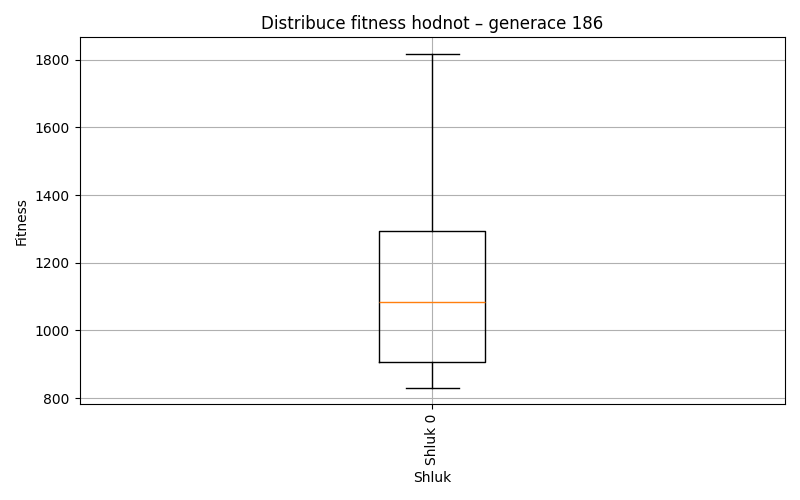
Generace 187
Stabilita mezi generací 186 → 187:
Shluk 0 → -1: 20 jedinců (24.7 %)
Shluk 0 → 0: 61 jedinců (75.3 %)
Shluk -1 → -1: 16 jedinců (84.2 %)
Shluk -1 → 0: 3 jedinců (15.8 %)
Jaccardovo mapování a overlap: Generace 186 → 187
- Shluk 0 → 0 (Jaccard: 0.73, Overlap: 0.95)
Posun centroidů mezi generací 186 → 187:
- Shluk 0: 10.2174
Generace 188
Stabilita mezi generací 187 → 188:
Shluk -1 → -1: 30 jedinců (83.3 %)
Shluk -1 → 0: 6 jedinců (16.7 %)
Shluk 0 → -1: 16 jedinců (25.0 %)
Shluk 0 → 0: 48 jedinců (75.0 %)
Jaccardovo mapování a overlap: Generace 187 → 188
- Shluk 0 → 0 (Jaccard: 0.69, Overlap: 0.89)
Posun centroidů mezi generací 187 → 188:
- Shluk 0: 7.6416
Generace 189
Stabilita mezi generací 188 → 189:
Shluk -1 → -1: 31 jedinců (67.4 %)
Shluk -1 → 0: 9 jedinců (19.6 %)
Shluk -1 → 11: 5 jedinců (10.9 %)
Shluk -1 → 10: 1 jedinců (2.2 %)
Shluk 0 → 0: 35 jedinců (64.8 %)
Shluk 0 → -1: 15 jedinců (27.8 %)
Shluk 0 → 10: 3 jedinců (5.6 %)
Shluk 0 → 11: 1 jedinců (1.9 %)
Jaccardovo mapování a overlap: Generace 188 → 189
- Shluk 0 → 0 (Jaccard: 0.56, Overlap: 0.80)
Posun centroidů mezi generací 188 → 189:
- Shluk 0: 10.6101
Generace 190
Stabilita mezi generací 189 → 190:
Shluk -1 → -1: 24 jedinců (52.2 %)
Shluk -1 → 0: 21 jedinců (45.7 %)
Shluk -1 → 10: 1 jedinců (2.2 %)
Shluk 0 → 0: 42 jedinců (95.5 %)
Shluk 0 → -1: 2 jedinců (4.5 %)
Shluk 10 → 10: 2 jedinců (50.0 %)
Shluk 10 → 0: 1 jedinců (25.0 %)
Shluk 10 → -1: 1 jedinců (25.0 %)
Shluk 11 → -1: 2 jedinců (33.3 %)
Shluk 11 → 0: 2 jedinců (33.3 %)
Shluk 11 → 10: 2 jedinců (33.3 %)
Jaccardovo mapování a overlap: Generace 189 → 190
- Shluk 0 → 0 (Jaccard: 0.62, Overlap: 0.95)
- Shluk 10 → 10 (Jaccard: 0.29, Overlap: 0.50)
- Shluk 11 → 10 (Jaccard: 0.22, Overlap: 0.40)
Posun centroidů mezi generací 189 → 190:
- Shluk 0: 7.6546
- Shluk 1: 146.8172
Generace 191
Stabilita mezi generací 190 → 191:
Shluk -1 → 0: 13 jedinců (44.8 %)
Shluk -1 → -1: 16 jedinců (55.2 %)
Shluk 0 → 0: 60 jedinců (90.9 %)
Shluk 0 → -1: 3 jedinců (4.5 %)
Shluk 0 → 10: 3 jedinců (4.5 %)
Shluk 10 → -1: 2 jedinců (40.0 %)
Shluk 10 → 0: 2 jedinců (40.0 %)
Shluk 10 → 10: 1 jedinců (20.0 %)
Jaccardovo mapování a overlap: Generace 190 → 191
- Shluk 0 → 0 (Jaccard: 0.74, Overlap: 0.91)
- Shluk 10 → 10 (Jaccard: 0.12, Overlap: 0.25)
Posun centroidů mezi generací 190 → 191:
- Shluk 0: 159.6474
- Shluk 1: 211.1621
Generace 192
Stabilita mezi generací 191 → 192:
Shluk 0 → -1: 6 jedinců (8.0 %)
Shluk 0 → 0: 69 jedinců (92.0 %)
Shluk -1 → 0: 10 jedinců (47.6 %)
Shluk -1 → -1: 11 jedinců (52.4 %)
Shluk 10 → 0: 2 jedinců (50.0 %)
Shluk 10 → -1: 2 jedinců (50.0 %)
Jaccardovo mapování a overlap: Generace 191 → 192
- Shluk 0 → 0 (Jaccard: 0.79, Overlap: 0.92)
- Shluk 10 → 0 (Jaccard: 0.02, Overlap: 0.50)
Posun centroidů mezi generací 191 → 192:
- Shluk 0: 35.8346
Generace 193
Stabilita mezi generací 192 → 193:
Shluk -1 → -1: 14 jedinců (73.7 %)
Shluk -1 → 0: 5 jedinců (26.3 %)
Shluk 0 → 0: 59 jedinců (72.8 %)
Shluk 0 → -1: 16 jedinců (19.8 %)
Shluk 0 → 12: 6 jedinců (7.4 %)
Jaccardovo mapování a overlap: Generace 192 → 193
- Shluk 0 → 0 (Jaccard: 0.69, Overlap: 0.92)
Posun centroidů mezi generací 192 → 193:
- Shluk 0: 72.4402
Generace 194
Stabilita mezi generací 193 → 194:
Shluk -1 → 0: 16 jedinců (53.3 %)
Shluk -1 → -1: 14 jedinců (46.7 %)
Shluk 0 → 0: 57 jedinců (89.1 %)
Shluk 0 → -1: 7 jedinců (10.9 %)
Shluk 12 → 0: 6 jedinců (100.0 %)
Jaccardovo mapování a overlap: Generace 193 → 194
- Shluk 0 → 0 (Jaccard: 0.66, Overlap: 0.89)
- Shluk 12 → 0 (Jaccard: 0.08, Overlap: 1.00)
Posun centroidů mezi generací 193 → 194:
- Shluk 0: 31.8480
Generace 195
Stabilita mezi generací 194 → 195:
Shluk 0 → -1: 19 jedinců (24.1 %)
Shluk 0 → 0: 60 jedinců (75.9 %)
Shluk -1 → -1: 14 jedinců (66.7 %)
Shluk -1 → 0: 7 jedinců (33.3 %)
Jaccardovo mapování a overlap: Generace 194 → 195
- Shluk 0 → 0 (Jaccard: 0.70, Overlap: 0.90)
Posun centroidů mezi generací 194 → 195:
- Shluk 0: 48.1784
Generace 196
Stabilita mezi generací 195 → 196:
Shluk -1 → -1: 27 jedinců (81.8 %)
Shluk -1 → 0: 6 jedinců (18.2 %)
Shluk 0 → -1: 21 jedinců (31.3 %)
Shluk 0 → 0: 46 jedinců (68.7 %)
Jaccardovo mapování a overlap: Generace 195 → 196
- Shluk 0 → 0 (Jaccard: 0.63, Overlap: 0.88)
Posun centroidů mezi generací 195 → 196:
- Shluk 0: 65.0697
Generace 197
Stabilita mezi generací 196 → 197:
Shluk -1 → -1: 15 jedinců (31.2 %)
Shluk -1 → 0: 26 jedinců (54.2 %)
Shluk -1 → 13: 7 jedinců (14.6 %)
Shluk 0 → 0: 46 jedinců (88.5 %)
Shluk 0 → -1: 4 jedinců (7.7 %)
Shluk 0 → 13: 2 jedinců (3.8 %)
Jaccardovo mapování a overlap: Generace 196 → 197
- Shluk 0 → 0 (Jaccard: 0.59, Overlap: 0.88)
Posun centroidů mezi generací 196 → 197:
- Shluk 0: 29.3560
Generace 198
Stabilita mezi generací 197 → 198:
Shluk -1 → -1: 19 jedinců (100.0 %)
Shluk 0 → -1: 66 jedinců (91.7 %)
Shluk 0 → 0: 6 jedinců (8.3 %)
Shluk 13 → -1: 9 jedinců (100.0 %)
Jaccardovo mapování a overlap: Generace 197 → 198
- Shluk 0 → 0 (Jaccard: 0.08, Overlap: 1.00)
- Shluk 13 → žádný vhodný přechod
Posun centroidů mezi generací 197 → 198:
- Shluk 0: 26.3389
Generace 199
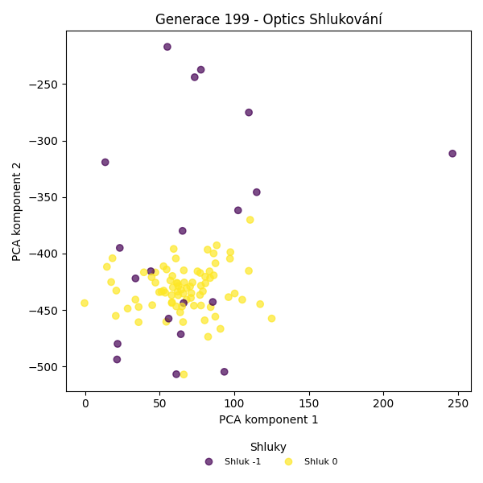
Stabilita mezi generací 198 → 199:
Shluk -1 → 0: 74 jedinců (78.7 %)
Shluk -1 → -1: 20 jedinců (21.3 %)
Shluk 0 → 0: 6 jedinců (100.0 %)
Jaccardovo mapování a overlap: Generace 198 → 199
- Shluk 0 → 0 (Jaccard: 0.07, Overlap: 1.00)
Posun centroidů mezi generací 198 → 199:
- Shluk 0: 33.8459
Generace 200
Stabilita mezi generací 199 → 200:
Shluk 0 → 0: 69 jedinců (86.2 %)
Shluk 0 → -1: 11 jedinců (13.8 %)
Shluk -1 → -1: 13 jedinců (65.0 %)
Shluk -1 → 0: 7 jedinců (35.0 %)
Jaccardovo mapování a overlap: Generace 199 → 200
- Shluk 0 → 0 (Jaccard: 0.79, Overlap: 0.91)
Posun centroidů mezi generací 199 → 200:
- Shluk 0: 19.1231
Generace 201
Stabilita mezi generací 200 → 201:
Shluk 0 → 0: 56 jedinců (73.7 %)
Shluk 0 → -1: 14 jedinců (18.4 %)
Shluk 0 → 14: 6 jedinců (7.9 %)
Shluk -1 → 0: 6 jedinců (25.0 %)
Shluk -1 → -1: 16 jedinců (66.7 %)
Shluk -1 → 14: 2 jedinců (8.3 %)
Jaccardovo mapování a overlap: Generace 200 → 201
- Shluk 0 → 0 (Jaccard: 0.68, Overlap: 0.90)
Posun centroidů mezi generací 200 → 201:
- Shluk 0: 28.9484
Generace 202
Stabilita mezi generací 201 → 202:
Shluk 0 → -1: 58 jedinců (93.5 %)
Shluk 0 → 0: 4 jedinců (6.5 %)
Shluk -1 → -1: 30 jedinců (100.0 %)
Shluk 14 → -1: 8 jedinců (100.0 %)
Jaccardovo mapování a overlap: Generace 201 → 202
- Shluk 0 → 0 (Jaccard: 0.06, Overlap: 1.00)
- Shluk 14 → žádný vhodný přechod
Posun centroidů mezi generací 201 → 202:
- Shluk 0: 71.9728
Generace 203
Stabilita mezi generací 202 → 203:
Shluk -1 → 0: 57 jedinců (59.4 %)
Shluk -1 → -1: 39 jedinců (40.6 %)
Shluk 0 → 0: 4 jedinců (100.0 %)
Jaccardovo mapování a overlap: Generace 202 → 203
- Shluk 0 → 0 (Jaccard: 0.07, Overlap: 1.00)
Posun centroidů mezi generací 202 → 203:
- Shluk 0: 72.8751
Generace 204
Stabilita mezi generací 203 → 204:
Shluk 0 → 0: 50 jedinců (82.0 %)
Shluk 0 → -1: 11 jedinců (18.0 %)
Shluk -1 → -1: 26 jedinců (66.7 %)
Shluk -1 → 0: 13 jedinců (33.3 %)
Jaccardovo mapování a overlap: Generace 203 → 204
- Shluk 0 → 0 (Jaccard: 0.68, Overlap: 0.82)
Posun centroidů mezi generací 203 → 204:
- Shluk 0: 8.6263
Generace 205
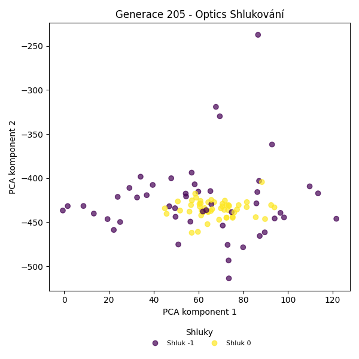
Stabilita mezi generací 204 → 205:
Shluk 0 → 0: 47 jedinců (74.6 %)
Shluk 0 → -1: 16 jedinců (25.4 %)
Shluk -1 → -1: 33 jedinců (89.2 %)
Shluk -1 → 0: 4 jedinců (10.8 %)
Jaccardovo mapování a overlap: Generace 204 → 205
- Shluk 0 → 0 (Jaccard: 0.70, Overlap: 0.92)
Posun centroidů mezi generací 204 → 205:
- Shluk 0: 7.4496
Generace 206
Stabilita mezi generací 205 → 206:
Shluk 0 → 0: 43 jedinců (84.3 %)
Shluk 0 → -1: 8 jedinců (15.7 %)
Shluk -1 → -1: 37 jedinců (75.5 %)
Shluk -1 → 0: 12 jedinců (24.5 %)
Jaccardovo mapování a overlap: Generace 205 → 206
- Shluk 0 → 0 (Jaccard: 0.68, Overlap: 0.84)
Posun centroidů mezi generací 205 → 206:
- Shluk 0: 7.9382
Generace 207
Stabilita mezi generací 206 → 207:
Shluk 0 → 0: 51 jedinců (92.7 %)
Shluk 0 → -1: 4 jedinců (7.3 %)
Shluk -1 → -1: 37 jedinců (82.2 %)
Shluk -1 → 0: 8 jedinců (17.8 %)
Jaccardovo mapování a overlap: Generace 206 → 207
- Shluk 0 → 0 (Jaccard: 0.81, Overlap: 0.93)
Posun centroidů mezi generací 206 → 207:
- Shluk 0: 10.6242
Generace 208
Stabilita mezi generací 207 → 208:
Shluk 0 → 0: 51 jedinců (86.4 %)
Shluk 0 → -1: 8 jedinců (13.6 %)
Shluk -1 → -1: 31 jedinců (75.6 %)
Shluk -1 → 0: 10 jedinců (24.4 %)
Jaccardovo mapování a overlap: Generace 207 → 208
- Shluk 0 → 0 (Jaccard: 0.74, Overlap: 0.86)
Posun centroidů mezi generací 207 → 208:
- Shluk 0: 11.1321
Generace 209

Stabilita mezi generací 208 → 209:
Shluk 0 → 0: 49 jedinců (80.3 %)
Shluk 0 → -1: 9 jedinců (14.8 %)
Shluk 0 → 15: 3 jedinců (4.9 %)
Shluk -1 → -1: 35 jedinců (89.7 %)
Shluk -1 → 0: 3 jedinců (7.7 %)
Shluk -1 → 15: 1 jedinců (2.6 %)
Jaccardovo mapování a overlap: Generace 208 → 209
- Shluk 0 → 0 (Jaccard: 0.77, Overlap: 0.94)
Posun centroidů mezi generací 208 → 209:
- Shluk 0: 9.4621
Generace 210
Stabilita mezi generací 209 → 210:
Shluk 0 → -1: 45 jedinců (86.5 %)
Shluk 0 → 0: 7 jedinců (13.5 %)
Shluk -1 → -1: 44 jedinců (100.0 %)
Shluk 15 → -1: 4 jedinců (100.0 %)
Jaccardovo mapování a overlap: Generace 209 → 210
- Shluk 0 → 0 (Jaccard: 0.13, Overlap: 1.00)
- Shluk 15 → žádný vhodný přechod
Posun centroidů mezi generací 209 → 210:
- Shluk 0: 5.0701
Generace 211
Stabilita mezi generací 210 → 211:
Shluk -1 → 0: 50 jedinců (53.8 %)
Shluk -1 → -1: 43 jedinců (46.2 %)
Shluk 0 → 0: 7 jedinců (100.0 %)
Jaccardovo mapování a overlap: Generace 210 → 211
- Shluk 0 → 0 (Jaccard: 0.12, Overlap: 1.00)
Posun centroidů mezi generací 210 → 211:
- Shluk 0: 5.0703
Generace 212
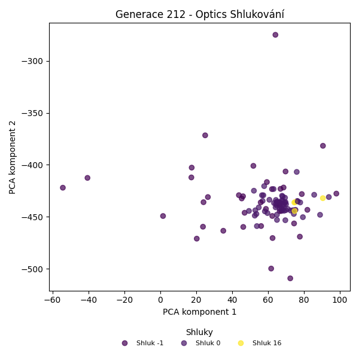
Stabilita mezi generací 211 → 212:
Shluk 0 → 0: 50 jedinců (87.7 %)
Shluk 0 → -1: 4 jedinců (7.0 %)
Shluk 0 → 16: 3 jedinců (5.3 %)
Shluk -1 → -1: 36 jedinců (83.7 %)
Shluk -1 → 16: 1 jedinců (2.3 %)
Shluk -1 → 0: 6 jedinců (14.0 %)
Jaccardovo mapování a overlap: Generace 211 → 212
- Shluk 0 → 0 (Jaccard: 0.79, Overlap: 0.89)
Posun centroidů mezi generací 211 → 212:
- Shluk 0: 7.2535
Generace 213
Stabilita mezi generací 212 → 213:
Shluk 0 → 0: 50 jedinců (89.3 %)
Shluk 0 → -1: 6 jedinců (10.7 %)
Shluk -1 → -1: 29 jedinců (72.5 %)
Shluk -1 → 0: 11 jedinců (27.5 %)
Shluk 16 → -1: 2 jedinců (50.0 %)
Shluk 16 → 0: 2 jedinců (50.0 %)
Jaccardovo mapování a overlap: Generace 212 → 213
- Shluk 0 → 0 (Jaccard: 0.72, Overlap: 0.89)
- Shluk 16 → 0 (Jaccard: 0.03, Overlap: 0.50)
Posun centroidů mezi generací 212 → 213:
- Shluk 0: 9.1581
Generace 214
Stabilita mezi generací 213 → 214:
Shluk 0 → 0: 59 jedinců (93.7 %)
Shluk 0 → -1: 4 jedinců (6.3 %)
Shluk -1 → -1: 25 jedinců (67.6 %)
Shluk -1 → 0: 12 jedinců (32.4 %)
Jaccardovo mapování a overlap: Generace 213 → 214
- Shluk 0 → 0 (Jaccard: 0.79, Overlap: 0.94)
Posun centroidů mezi generací 213 → 214:
- Shluk 0: 3.9508
Generace 215
Stabilita mezi generací 214 → 215:
Shluk 0 → 0: 58 jedinců (81.7 %)
Shluk 0 → -1: 13 jedinců (18.3 %)
Shluk -1 → -1: 25 jedinců (86.2 %)
Shluk -1 → 0: 4 jedinců (13.8 %)
Jaccardovo mapování a overlap: Generace 214 → 215
- Shluk 0 → 0 (Jaccard: 0.77, Overlap: 0.94)
Posun centroidů mezi generací 214 → 215:
- Shluk 0: 4.3789
Generace 216
Stabilita mezi generací 215 → 216:
Shluk 0 → 0: 60 jedinců (96.8 %)
Shluk 0 → -1: 2 jedinců (3.2 %)
Shluk -1 → -1: 27 jedinců (71.1 %)
Shluk -1 → 0: 11 jedinců (28.9 %)
Jaccardovo mapování a overlap: Generace 215 → 216
- Shluk 0 → 0 (Jaccard: 0.82, Overlap: 0.97)
Posun centroidů mezi generací 215 → 216:
- Shluk 0: 4.6885
Generace 217
Stabilita mezi generací 216 → 217:
Shluk 0 → 0: 53 jedinců (74.6 %)
Shluk 0 → -1: 18 jedinců (25.4 %)
Shluk -1 → -1: 28 jedinců (96.6 %)
Shluk -1 → 0: 1 jedinců (3.4 %)
Jaccardovo mapování a overlap: Generace 216 → 217
- Shluk 0 → 0 (Jaccard: 0.74, Overlap: 0.98)
Posun centroidů mezi generací 216 → 217:
- Shluk 0: 4.7487
Generace 218
Stabilita mezi generací 217 → 218:
Shluk 0 → 0: 54 jedinců (100.0 %)
Shluk -1 → -1: 23 jedinců (50.0 %)
Shluk -1 → 0: 23 jedinců (50.0 %)
Jaccardovo mapování a overlap: Generace 217 → 218
- Shluk 0 → 0 (Jaccard: 0.70, Overlap: 1.00)
Posun centroidů mezi generací 217 → 218:
- Shluk 0: 3.6255
Generace 219
Stabilita mezi generací 218 → 219:
Shluk 0 → 0: 51 jedinců (66.2 %)
Shluk 0 → -1: 26 jedinců (33.8 %)
Shluk -1 → -1: 22 jedinců (95.7 %)
Shluk -1 → 0: 1 jedinců (4.3 %)
Jaccardovo mapování a overlap: Generace 218 → 219
- Shluk 0 → 0 (Jaccard: 0.65, Overlap: 0.98)
Posun centroidů mezi generací 218 → 219:
- Shluk 0: 5.0209
Generace 220
Stabilita mezi generací 219 → 220:
Shluk 0 → 0: 50 jedinců (96.2 %)
Shluk 0 → -1: 2 jedinců (3.8 %)
Shluk -1 → -1: 22 jedinců (45.8 %)
Shluk -1 → 0: 26 jedinců (54.2 %)
Jaccardovo mapování a overlap: Generace 219 → 220
- Shluk 0 → 0 (Jaccard: 0.64, Overlap: 0.96)
Posun centroidů mezi generací 219 → 220:
- Shluk 0: 5.1130
Generace 221

Stabilita mezi generací 220 → 221:
Shluk 0 → 0: 68 jedinců (89.5 %)
Shluk 0 → -1: 8 jedinců (10.5 %)
Shluk -1 → -1: 21 jedinců (87.5 %)
Shluk -1 → 0: 3 jedinců (12.5 %)
Jaccardovo mapování a overlap: Generace 220 → 221
- Shluk 0 → 0 (Jaccard: 0.86, Overlap: 0.96)
Posun centroidů mezi generací 220 → 221:
- Shluk 0: 3.6585

Generace 222
Stabilita mezi generací 221 → 222:
Shluk 0 → 0: 51 jedinců (71.8 %)
Shluk 0 → -1: 20 jedinců (28.2 %)
Shluk -1 → -1: 28 jedinců (96.6 %)
Shluk -1 → 0: 1 jedinců (3.4 %)
Jaccardovo mapování a overlap: Generace 221 → 222
- Shluk 0 → 0 (Jaccard: 0.71, Overlap: 0.98)
Posun centroidů mezi generací 221 → 222:
- Shluk 0: 3.9726
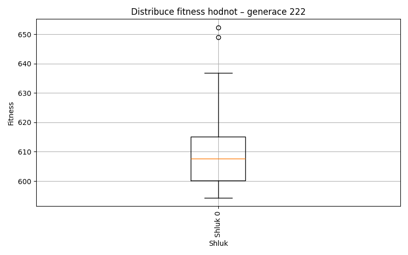
Generace 223
Stabilita mezi generací 222 → 223:
Shluk 0 → 0: 49 jedinců (94.2 %)
Shluk 0 → -1: 3 jedinců (5.8 %)
Shluk -1 → -1: 36 jedinců (75.0 %)
Shluk -1 → 0: 12 jedinců (25.0 %)
Jaccardovo mapování a overlap: Generace 222 → 223
- Shluk 0 → 0 (Jaccard: 0.77, Overlap: 0.94)
Posun centroidů mezi generací 222 → 223:
- Shluk 0: 6.8561
Generace 224

Stabilita mezi generací 223 → 224:
Shluk 0 → 0: 55 jedinců (90.2 %)
Shluk 0 → -1: 6 jedinců (9.8 %)
Shluk -1 → -1: 31 jedinců (79.5 %)
Shluk -1 → 0: 8 jedinců (20.5 %)
Jaccardovo mapování a overlap: Generace 223 → 224
- Shluk 0 → 0 (Jaccard: 0.80, Overlap: 0.90)
Posun centroidů mezi generací 223 → 224:
- Shluk 0: 2.7483
Generace 225
Stabilita mezi generací 224 → 225:
Shluk 0 → 0: 50 jedinců (79.4 %)
Shluk 0 → -1: 13 jedinců (20.6 %)
Shluk -1 → -1: 31 jedinců (83.8 %)
Shluk -1 → 0: 6 jedinců (16.2 %)
Jaccardovo mapování a overlap: Generace 224 → 225
- Shluk 0 → 0 (Jaccard: 0.72, Overlap: 0.89)
Posun centroidů mezi generací 224 → 225:
- Shluk 0: 3.2732

Generace 226
Stabilita mezi generací 225 → 226:
Shluk 0 → 0: 49 jedinců (87.5 %)
Shluk 0 → -1: 7 jedinců (12.5 %)
Shluk -1 → -1: 31 jedinců (70.5 %)
Shluk -1 → 0: 13 jedinců (29.5 %)
Jaccardovo mapování a overlap: Generace 225 → 226
- Shluk 0 → 0 (Jaccard: 0.71, Overlap: 0.88)
Posun centroidů mezi generací 225 → 226:
- Shluk 0: 3.8220
Generace 227
Stabilita mezi generací 226 → 227:
Shluk 0 → 0: 57 jedinců (91.9 %)
Shluk 0 → -1: 5 jedinců (8.1 %)
Shluk -1 → -1: 30 jedinců (78.9 %)
Shluk -1 → 0: 8 jedinců (21.1 %)
Jaccardovo mapování a overlap: Generace 226 → 227
- Shluk 0 → 0 (Jaccard: 0.81, Overlap: 0.92)
Posun centroidů mezi generací 226 → 227:
- Shluk 0: 2.8297
Generace 228
Stabilita mezi generací 227 → 228:
Shluk 0 → 0: 58 jedinců (89.2 %)
Shluk 0 → -1: 7 jedinců (10.8 %)
Shluk -1 → -1: 28 jedinců (80.0 %)
Shluk -1 → 0: 7 jedinců (20.0 %)
Jaccardovo mapování a overlap: Generace 227 → 228
- Shluk 0 → 0 (Jaccard: 0.81, Overlap: 0.89)
Posun centroidů mezi generací 227 → 228:
- Shluk 0: 4.5751
Generace 229
Stabilita mezi generací 228 → 229:
Shluk 0 → 0: 63 jedinců (96.9 %)
Shluk 0 → -1: 2 jedinců (3.1 %)
Shluk -1 → -1: 24 jedinců (68.6 %)
Shluk -1 → 0: 11 jedinců (31.4 %)
Jaccardovo mapování a overlap: Generace 228 → 229
- Shluk 0 → 0 (Jaccard: 0.83, Overlap: 0.97)
Posun centroidů mezi generací 228 → 229:
- Shluk 0: 2.0451
Generace 230
Stabilita mezi generací 229 → 230:
Shluk 0 → 0: 62 jedinců (83.8 %)
Shluk 0 → -1: 12 jedinců (16.2 %)
Shluk -1 → -1: 17 jedinců (65.4 %)
Shluk -1 → 0: 9 jedinců (34.6 %)
Jaccardovo mapování a overlap: Generace 229 → 230
- Shluk 0 → 0 (Jaccard: 0.75, Overlap: 0.87)
Posun centroidů mezi generací 229 → 230:
- Shluk 0: 3.3521

Generace 231
Stabilita mezi generací 230 → 231:
Shluk 0 → 0: 48 jedinců (67.6 %)
Shluk 0 → -1: 23 jedinců (32.4 %)
Shluk -1 → -1: 26 jedinců (89.7 %)
Shluk -1 → 0: 3 jedinců (10.3 %)
Jaccardovo mapování a overlap: Generace 230 → 231
- Shluk 0 → 0 (Jaccard: 0.65, Overlap: 0.94)
Posun centroidů mezi generací 230 → 231:
- Shluk 0: 2.6126
Generace 232
Stabilita mezi generací 231 → 232:
Shluk 0 → 0: 44 jedinců (86.3 %)
Shluk 0 → -1: 7 jedinců (13.7 %)
Shluk -1 → -1: 37 jedinců (75.5 %)
Shluk -1 → 0: 12 jedinců (24.5 %)
Jaccardovo mapování a overlap: Generace 231 → 232
- Shluk 0 → 0 (Jaccard: 0.70, Overlap: 0.86)
Posun centroidů mezi generací 231 → 232:
- Shluk 0: 2.0374
Generace 233
Stabilita mezi generací 232 → 233:
Shluk 0 → 0: 49 jedinců (87.5 %)
Shluk 0 → -1: 7 jedinců (12.5 %)
Shluk -1 → -1: 35 jedinců (79.5 %)
Shluk -1 → 0: 9 jedinců (20.5 %)
Jaccardovo mapování a overlap: Generace 232 → 233
- Shluk 0 → 0 (Jaccard: 0.75, Overlap: 0.88)
Posun centroidů mezi generací 232 → 233:
- Shluk 0: 2.3577
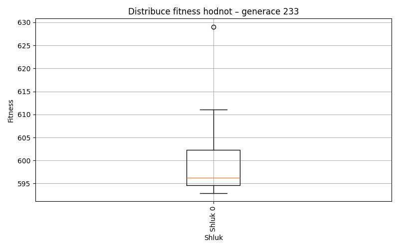
Generace 234
Stabilita mezi generací 233 → 234:
Shluk 0 → 0: 55 jedinců (94.8 %)
Shluk 0 → -1: 3 jedinců (5.2 %)
Shluk -1 → -1: 24 jedinců (57.1 %)
Shluk -1 → 0: 18 jedinců (42.9 %)
Jaccardovo mapování a overlap: Generace 233 → 234
- Shluk 0 → 0 (Jaccard: 0.72, Overlap: 0.95)
Posun centroidů mezi generací 233 → 234:
- Shluk 0: 1.4915
Generace 235
Stabilita mezi generací 234 → 235:
Shluk 0 → 0: 71 jedinců (97.3 %)
Shluk 0 → -1: 2 jedinců (2.7 %)
Shluk -1 → -1: 22 jedinců (81.5 %)
Shluk -1 → 0: 5 jedinců (18.5 %)
Jaccardovo mapování a overlap: Generace 234 → 235
- Shluk 0 → 0 (Jaccard: 0.91, Overlap: 0.97)
Posun centroidů mezi generací 234 → 235:
- Shluk 0: 1.4065
Generace 236
Stabilita mezi generací 235 → 236:
Shluk 0 → 0: 56 jedinců (73.7 %)
Shluk 0 → -1: 20 jedinců (26.3 %)
Shluk -1 → -1: 24 jedinců (100.0 %)
Jaccardovo mapování a overlap: Generace 235 → 236
- Shluk 0 → 0 (Jaccard: 0.74, Overlap: 1.00)
Posun centroidů mezi generací 235 → 236:
- Shluk 0: 1.5388
Generace 237
Stabilita mezi generací 236 → 237:
Shluk 0 → 0: 46 jedinců (82.1 %)
Shluk 0 → -1: 10 jedinců (17.9 %)
Shluk -1 → -1: 37 jedinců (84.1 %)
Shluk -1 → 0: 7 jedinců (15.9 %)
Jaccardovo mapování a overlap: Generace 236 → 237
- Shluk 0 → 0 (Jaccard: 0.73, Overlap: 0.87)
Posun centroidů mezi generací 236 → 237:
- Shluk 0: 1.6480
Generace 238
Stabilita mezi generací 237 → 238:
Shluk 0 → 0: 47 jedinců (88.7 %)
Shluk 0 → -1: 6 jedinců (11.3 %)
Shluk -1 → -1: 27 jedinců (57.4 %)
Shluk -1 → 0: 20 jedinců (42.6 %)
Jaccardovo mapování a overlap: Generace 237 → 238
- Shluk 0 → 0 (Jaccard: 0.64, Overlap: 0.89)
Posun centroidů mezi generací 237 → 238:
- Shluk 0: 1.5393
Generace 239

Stabilita mezi generací 238 → 239:
Shluk 0 → 0: 54 jedinců (80.6 %)
Shluk 0 → -1: 13 jedinců (19.4 %)
Shluk -1 → -1: 26 jedinců (78.8 %)
Shluk -1 → 0: 7 jedinců (21.2 %)
Jaccardovo mapování a overlap: Generace 238 → 239
- Shluk 0 → 0 (Jaccard: 0.73, Overlap: 0.89)
Posun centroidů mezi generací 238 → 239:
- Shluk 0: 1.6698
Generace 240
Stabilita mezi generací 239 → 240:
Shluk 0 → -1: 40 jedinců (65.6 %)
Shluk 0 → 0: 21 jedinců (34.4 %)
Shluk -1 → -1: 38 jedinců (97.4 %)
Shluk -1 → 0: 1 jedinců (2.6 %)
Jaccardovo mapování a overlap: Generace 239 → 240
- Shluk 0 → 0 (Jaccard: 0.34, Overlap: 0.95)
Posun centroidů mezi generací 239 → 240:
- Shluk 0: 1.0826
Generace 241
Stabilita mezi generací 240 → 241:
Shluk -1 → 0: 39 jedinců (50.0 %)
Shluk -1 → -1: 39 jedinců (50.0 %)
Shluk 0 → 0: 22 jedinců (100.0 %)
Jaccardovo mapování a overlap: Generace 240 → 241
- Shluk 0 → 0 (Jaccard: 0.36, Overlap: 1.00)
Posun centroidů mezi generací 240 → 241:
- Shluk 0: 0.9175
Generace 242
Stabilita mezi generací 241 → 242:
Shluk 0 → 0: 52 jedinců (85.2 %)
Shluk 0 → -1: 9 jedinců (14.8 %)
Shluk -1 → -1: 37 jedinců (94.9 %)
Shluk -1 → 0: 2 jedinců (5.1 %)
Jaccardovo mapování a overlap: Generace 241 → 242
- Shluk 0 → 0 (Jaccard: 0.83, Overlap: 0.96)
Posun centroidů mezi generací 241 → 242:
- Shluk 0: 0.6532
Generace 243
Stabilita mezi generací 242 → 243:
Shluk 0 → -1: 49 jedinců (90.7 %)
Shluk 0 → 0: 5 jedinců (9.3 %)
Shluk -1 → -1: 46 jedinců (100.0 %)
Jaccardovo mapování a overlap: Generace 242 → 243
- Shluk 0 → 0 (Jaccard: 0.09, Overlap: 1.00)
Posun centroidů mezi generací 242 → 243:
- Shluk 0: 0.8662
Generace 244
Stabilita mezi generací 243 → 244:
Shluk -1 → 0: 60 jedinců (63.2 %)
Shluk -1 → -1: 35 jedinců (36.8 %)
Shluk 0 → 0: 5 jedinců (100.0 %)
Jaccardovo mapování a overlap: Generace 243 → 244
- Shluk 0 → 0 (Jaccard: 0.08, Overlap: 1.00)
Posun centroidů mezi generací 243 → 244:
- Shluk 0: 0.9131
Generace 245
Stabilita mezi generací 244 → 245:
Shluk 0 → 0: 61 jedinců (93.8 %)
Shluk 0 → -1: 4 jedinců (6.2 %)
Shluk -1 → -1: 29 jedinců (82.9 %)
Shluk -1 → 0: 6 jedinců (17.1 %)
Jaccardovo mapování a overlap: Generace 244 → 245
- Shluk 0 → 0 (Jaccard: 0.86, Overlap: 0.94)
Posun centroidů mezi generací 244 → 245:
- Shluk 0: 0.6662
Generace 246
Stabilita mezi generací 245 → 246:
Shluk 0 → 0: 67 jedinců (100.0 %)
Shluk -1 → -1: 16 jedinců (48.5 %)
Shluk -1 → 0: 17 jedinců (51.5 %)
Jaccardovo mapování a overlap: Generace 245 → 246
- Shluk 0 → 0 (Jaccard: 0.80, Overlap: 1.00)
Posun centroidů mezi generací 245 → 246:
- Shluk 0: 0.6727
Generace 247
Stabilita mezi generací 246 → 247:
Shluk 0 → 0: 76 jedinců (90.5 %)
Shluk 0 → -1: 8 jedinců (9.5 %)
Shluk -1 → -1: 15 jedinců (93.8 %)
Shluk -1 → 0: 1 jedinců (6.2 %)
Jaccardovo mapování a overlap: Generace 246 → 247
- Shluk 0 → 0 (Jaccard: 0.89, Overlap: 0.99)
Posun centroidů mezi generací 246 → 247:
- Shluk 0: 0.8804
Generace 248
Stabilita mezi generací 247 → 248:
Shluk 0 → 0: 67 jedinců (87.0 %)
Shluk 0 → -1: 10 jedinců (13.0 %)
Shluk -1 → -1: 18 jedinců (78.3 %)
Shluk -1 → 0: 5 jedinců (21.7 %)
Jaccardovo mapování a overlap: Generace 247 → 248
- Shluk 0 → 0 (Jaccard: 0.82, Overlap: 0.93)
Posun centroidů mezi generací 247 → 248:
- Shluk 0: 0.6753
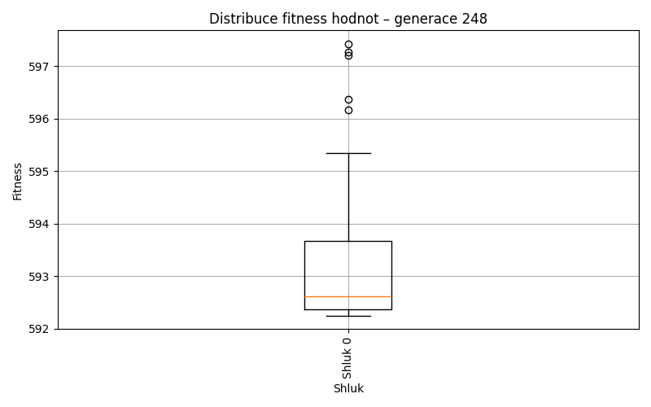
Generace 249
Stabilita mezi generací 248 → 249:
Shluk 0 → 0: 71 jedinců (98.6 %)
Shluk 0 → -1: 1 jedinců (1.4 %)
Shluk -1 → -1: 17 jedinců (60.7 %)
Shluk -1 → 0: 11 jedinců (39.3 %)
Jaccardovo mapování a overlap: Generace 248 → 249
- Shluk 0 → 0 (Jaccard: 0.86, Overlap: 0.99)
Posun centroidů mezi generací 248 → 249:
- Shluk 0: 0.5370
Generace 250
Stabilita mezi generací 249 → 250:
Shluk 0 → 0: 75 jedinců (91.5 %)
Shluk 0 → -1: 7 jedinců (8.5 %)
Shluk -1 → -1: 15 jedinců (83.3 %)
Shluk -1 → 0: 3 jedinců (16.7 %)
Jaccardovo mapování a overlap: Generace 249 → 250
- Shluk 0 → 0 (Jaccard: 0.88, Overlap: 0.96)
Posun centroidů mezi generací 249 → 250:
- Shluk 0: 0.9792
Generace 251
Stabilita mezi generací 250 → 251:
Shluk 0 → 0: 72 jedinců (92.3 %)
Shluk 0 → -1: 6 jedinců (7.7 %)
Shluk -1 → 0: 2 jedinců (9.1 %)
Shluk -1 → -1: 20 jedinců (90.9 %)
Jaccardovo mapování a overlap: Generace 250 → 251
- Shluk 0 → 0 (Jaccard: 0.90, Overlap: 0.97)
Posun centroidů mezi generací 250 → 251:
- Shluk 0: 0.3617
Generace 252
Stabilita mezi generací 251 → 252:
Shluk 0 → 0: 69 jedinců (93.2 %)
Shluk 0 → -1: 5 jedinců (6.8 %)
Shluk -1 → -1: 24 jedinců (92.3 %)
Shluk -1 → 0: 2 jedinců (7.7 %)
Jaccardovo mapování a overlap: Generace 251 → 252
- Shluk 0 → 0 (Jaccard: 0.91, Overlap: 0.97)
Posun centroidů mezi generací 251 → 252:
- Shluk 0: 0.5575
Generace 253

Stabilita mezi generací 252 → 253:
Shluk 0 → 0: 69 jedinců (97.2 %)
Shluk 0 → -1: 2 jedinců (2.8 %)
Shluk -1 → 0: 10 jedinců (34.5 %)
Shluk -1 → -1: 19 jedinců (65.5 %)
Jaccardovo mapování a overlap: Generace 252 → 253
- Shluk 0 → 0 (Jaccard: 0.85, Overlap: 0.97)
Posun centroidů mezi generací 252 → 253:
- Shluk 0: 0.4165
Generace 254

Stabilita mezi generací 253 → 254:
Shluk 0 → 0: 61 jedinců (77.2 %)
Shluk 0 → -1: 18 jedinců (22.8 %)
Shluk -1 → -1: 20 jedinců (95.2 %)
Shluk -1 → 0: 1 jedinců (4.8 %)
Jaccardovo mapování a overlap: Generace 253 → 254
- Shluk 0 → 0 (Jaccard: 0.76, Overlap: 0.98)
Posun centroidů mezi generací 253 → 254:
- Shluk 0: 0.4599
Generace 255
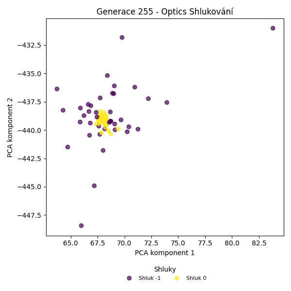
Stabilita mezi generací 254 → 255:
Shluk 0 → -1: 6 jedinců (9.7 %)
Shluk 0 → 0: 56 jedinců (90.3 %)
Shluk -1 → -1: 33 jedinců (86.8 %)
Shluk -1 → 0: 5 jedinců (13.2 %)
Jaccardovo mapování a overlap: Generace 254 → 255
- Shluk 0 → 0 (Jaccard: 0.84, Overlap: 0.92)
Posun centroidů mezi generací 254 → 255:
- Shluk 0: 0.2097
Generace 256
Stabilita mezi generací 255 → 256:
Shluk -1 → 0: 21 jedinců (53.8 %)
Shluk -1 → -1: 18 jedinců (46.2 %)
Shluk 0 → 0: 61 jedinců (100.0 %)
Jaccardovo mapování a overlap: Generace 255 → 256
- Shluk 0 → 0 (Jaccard: 0.74, Overlap: 1.00)
Posun centroidů mezi generací 255 → 256:
- Shluk 0: 0.4368
Generace 257
Stabilita mezi generací 256 → 257:
Shluk 0 → 0: 71 jedinců (86.6 %)
Shluk 0 → -1: 11 jedinců (13.4 %)
Shluk -1 → -1: 16 jedinců (88.9 %)
Shluk -1 → 0: 2 jedinců (11.1 %)
Jaccardovo mapování a overlap: Generace 256 → 257
- Shluk 0 → 0 (Jaccard: 0.85, Overlap: 0.97)
Posun centroidů mezi generací 256 → 257:
- Shluk 0: 0.2163
Generace 258
Stabilita mezi generací 257 → 258:
Shluk 0 → 0: 70 jedinců (95.9 %)
Shluk 0 → -1: 3 jedinců (4.1 %)
Shluk -1 → 0: 13 jedinců (48.1 %)
Shluk -1 → -1: 14 jedinců (51.9 %)
Jaccardovo mapování a overlap: Generace 257 → 258
- Shluk 0 → 0 (Jaccard: 0.81, Overlap: 0.96)
Posun centroidů mezi generací 257 → 258:
- Shluk 0: 0.1964
Generace 259
Stabilita mezi generací 258 → 259:
Shluk 0 → 0: 57 jedinců (68.7 %)
Shluk 0 → -1: 26 jedinců (31.3 %)
Shluk -1 → -1: 17 jedinců (100.0 %)
Jaccardovo mapování a overlap: Generace 258 → 259
- Shluk 0 → 0 (Jaccard: 0.69, Overlap: 1.00)
Posun centroidů mezi generací 258 → 259:
- Shluk 0: 0.2412
Generace 260
Stabilita mezi generací 259 → 260:
Shluk 0 → 0: 57 jedinců (100.0 %)
Shluk -1 → 0: 26 jedinců (60.5 %)
Shluk -1 → -1: 17 jedinců (39.5 %)
Jaccardovo mapování a overlap: Generace 259 → 260
- Shluk 0 → 0 (Jaccard: 0.69, Overlap: 1.00)
Posun centroidů mezi generací 259 → 260:
- Shluk 0: 0.2600
Generace 261
Stabilita mezi generací 260 → 261:
Shluk 0 → 0: 74 jedinců (89.2 %)
Shluk 0 → -1: 9 jedinců (10.8 %)
Shluk -1 → -1: 13 jedinců (76.5 %)
Shluk -1 → 0: 4 jedinců (23.5 %)
Jaccardovo mapování a overlap: Generace 260 → 261
- Shluk 0 → 0 (Jaccard: 0.85, Overlap: 0.95)
Posun centroidů mezi generací 260 → 261:
- Shluk 0: 0.2456
Generace 262
Stabilita mezi generací 261 → 262:
Shluk 0 → 0: 58 jedinců (74.4 %)
Shluk 0 → -1: 20 jedinců (25.6 %)
Shluk -1 → -1: 21 jedinců (95.5 %)
Shluk -1 → 0: 1 jedinců (4.5 %)
Jaccardovo mapování a overlap: Generace 261 → 262
- Shluk 0 → 0 (Jaccard: 0.73, Overlap: 0.98)
Posun centroidů mezi generací 261 → 262:
- Shluk 0: 0.1954
Generace 263
Stabilita mezi generací 262 → 263:
Shluk 0 → 0: 59 jedinců (100.0 %)
Shluk -1 → 0: 21 jedinců (51.2 %)
Shluk -1 → -1: 20 jedinců (48.8 %)
Jaccardovo mapování a overlap: Generace 262 → 263
- Shluk 0 → 0 (Jaccard: 0.74, Overlap: 1.00)
Posun centroidů mezi generací 262 → 263:
- Shluk 0: 0.1684

Generace 264
Stabilita mezi generací 263 → 264:
Shluk 0 → 0: 77 jedinců (96.2 %)
Shluk 0 → -1: 3 jedinců (3.8 %)
Shluk -1 → -1: 18 jedinců (90.0 %)
Shluk -1 → 0: 2 jedinců (10.0 %)
Jaccardovo mapování a overlap: Generace 263 → 264
- Shluk 0 → 0 (Jaccard: 0.94, Overlap: 0.97)
Posun centroidů mezi generací 263 → 264:
- Shluk 0: 0.1115
Generace 265

Stabilita mezi generací 264 → 265:
Shluk 0 → 0: 61 jedinců (77.2 %)
Shluk 0 → -1: 18 jedinců (22.8 %)
Shluk -1 → -1: 21 jedinců (100.0 %)
Jaccardovo mapování a overlap: Generace 264 → 265
- Shluk 0 → 0 (Jaccard: 0.77, Overlap: 1.00)
Posun centroidů mezi generací 264 → 265:
- Shluk 0: 0.1041
Generace 266
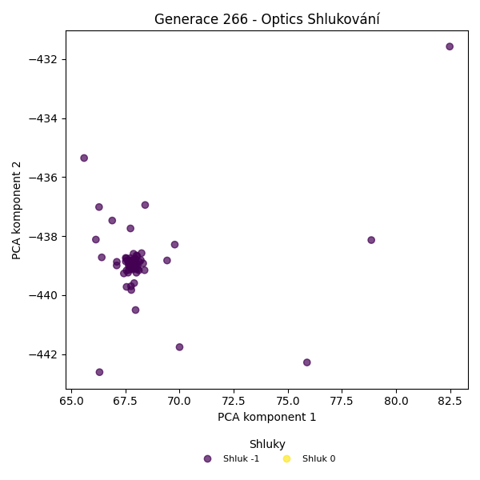
Stabilita mezi generací 265 → 266:
Shluk 0 → -1: 56 jedinců (91.8 %)
Shluk 0 → 0: 5 jedinců (8.2 %)
Shluk -1 → -1: 39 jedinců (100.0 %)
Jaccardovo mapování a overlap: Generace 265 → 266
- Shluk 0 → 0 (Jaccard: 0.08, Overlap: 1.00)
Posun centroidů mezi generací 265 → 266:
- Shluk 0: 0.1196
Generace 267
Stabilita mezi generací 266 → 267:
Shluk -1 → 0: 85 jedinců (89.5 %)
Shluk -1 → -1: 10 jedinců (10.5 %)
Shluk 0 → 0: 5 jedinců (100.0 %)
Jaccardovo mapování a overlap: Generace 266 → 267
- Shluk 0 → 0 (Jaccard: 0.06, Overlap: 1.00)
Posun centroidů mezi generací 266 → 267:
- Shluk 0: 0.1839
Generace 268
Stabilita mezi generací 267 → 268:
Shluk 0 → 0: 82 jedinců (91.1 %)
Shluk 0 → -1: 8 jedinců (8.9 %)
Shluk -1 → -1: 9 jedinců (90.0 %)
Shluk -1 → 0: 1 jedinců (10.0 %)
Jaccardovo mapování a overlap: Generace 267 → 268
- Shluk 0 → 0 (Jaccard: 0.90, Overlap: 0.99)
Posun centroidů mezi generací 267 → 268:
- Shluk 0: 0.1906

Generace 269
Stabilita mezi generací 268 → 269:
Shluk 0 → 0: 83 jedinců (100.0 %)
Shluk -1 → -1: 13 jedinců (76.5 %)
Shluk -1 → 0: 4 jedinců (23.5 %)
Jaccardovo mapování a overlap: Generace 268 → 269
- Shluk 0 → 0 (Jaccard: 0.95, Overlap: 1.00)
Posun centroidů mezi generací 268 → 269:
- Shluk 0: 0.1458
Generace 270
Stabilita mezi generací 269 → 270:
Shluk 0 → 0: 76 jedinců (87.4 %)
Shluk 0 → -1: 11 jedinců (12.6 %)
Shluk -1 → -1: 11 jedinců (84.6 %)
Shluk -1 → 0: 2 jedinců (15.4 %)
Jaccardovo mapování a overlap: Generace 269 → 270
- Shluk 0 → 0 (Jaccard: 0.85, Overlap: 0.97)
Posun centroidů mezi generací 269 → 270:
- Shluk 0: 0.1689
Generace 271
Stabilita mezi generací 270 → 271:
Shluk 0 → 0: 77 jedinců (98.7 %)
Shluk 0 → -1: 1 jedinců (1.3 %)
Shluk -1 → -1: 17 jedinců (77.3 %)
Shluk -1 → 0: 5 jedinců (22.7 %)
Jaccardovo mapování a overlap: Generace 270 → 271
- Shluk 0 → 0 (Jaccard: 0.93, Overlap: 0.99)
Posun centroidů mezi generací 270 → 271:
- Shluk 0: 0.0752
Generace 272

Stabilita mezi generací 271 → 272:
Shluk 0 → 0: 78 jedinců (95.1 %)
Shluk 0 → -1: 4 jedinců (4.9 %)
Shluk -1 → -1: 16 jedinců (88.9 %)
Shluk -1 → 0: 2 jedinců (11.1 %)
Jaccardovo mapování a overlap: Generace 271 → 272
- Shluk 0 → 0 (Jaccard: 0.93, Overlap: 0.97)
Posun centroidů mezi generací 271 → 272:
- Shluk 0: 0.0790
Generace 273
Stabilita mezi generací 272 → 273:
Shluk 0 → 0: 43 jedinců (53.8 %)
Shluk 0 → -1: 37 jedinců (46.2 %)
Shluk -1 → -1: 20 jedinců (100.0 %)
Jaccardovo mapování a overlap: Generace 272 → 273
- Shluk 0 → 0 (Jaccard: 0.54, Overlap: 1.00)
Posun centroidů mezi generací 272 → 273:
- Shluk 0: 0.0604
Generace 274
Stabilita mezi generací 273 → 274:
Shluk 0 → 0: 43 jedinců (100.0 %)
Shluk -1 → 0: 44 jedinců (77.2 %)
Shluk -1 → -1: 13 jedinců (22.8 %)
Jaccardovo mapování a overlap: Generace 273 → 274
- Shluk 0 → 0 (Jaccard: 0.49, Overlap: 1.00)
Posun centroidů mezi generací 273 → 274:
- Shluk 0: 0.1010
Generace 275
Stabilita mezi generací 274 → 275:
Shluk 0 → 0: 51 jedinců (58.6 %)
Shluk 0 → -1: 36 jedinců (41.4 %)
Shluk -1 → -1: 13 jedinců (100.0 %)
Jaccardovo mapování a overlap: Generace 274 → 275
- Shluk 0 → 0 (Jaccard: 0.59, Overlap: 1.00)
Posun centroidů mezi generací 274 → 275:
- Shluk 0: 0.1060

Generace 276
Stabilita mezi generací 275 → 276:
Shluk 0 → 0: 48 jedinců (94.1 %)
Shluk 0 → -1: 3 jedinců (5.9 %)
Shluk -1 → -1: 42 jedinců (85.7 %)
Shluk -1 → 0: 7 jedinců (14.3 %)
Jaccardovo mapování a overlap: Generace 275 → 276
- Shluk 0 → 0 (Jaccard: 0.83, Overlap: 0.94)
Posun centroidů mezi generací 275 → 276:
- Shluk 0: 0.0225
Generace 277
Stabilita mezi generací 276 → 277:
Shluk 0 → 0: 54 jedinců (98.2 %)
Shluk 0 → -1: 1 jedinců (1.8 %)
Shluk -1 → -1: 36 jedinců (80.0 %)
Shluk -1 → 0: 9 jedinců (20.0 %)
Jaccardovo mapování a overlap: Generace 276 → 277
- Shluk 0 → 0 (Jaccard: 0.84, Overlap: 0.98)
Posun centroidů mezi generací 276 → 277:
- Shluk 0: 0.0517
Generace 278
Stabilita mezi generací 277 → 278:
Shluk 0 → 0: 59 jedinců (93.7 %)
Shluk 0 → -1: 4 jedinců (6.3 %)
Shluk -1 → -1: 32 jedinců (86.5 %)
Shluk -1 → 0: 5 jedinců (13.5 %)
Jaccardovo mapování a overlap: Generace 277 → 278
- Shluk 0 → 0 (Jaccard: 0.87, Overlap: 0.94)
Posun centroidů mezi generací 277 → 278:
- Shluk 0: 0.0478
Generace 279
Stabilita mezi generací 278 → 279:
Shluk 0 → 0: 64 jedinců (100.0 %)
Shluk -1 → 0: 19 jedinců (52.8 %)
Shluk -1 → -1: 17 jedinců (47.2 %)
Jaccardovo mapování a overlap: Generace 278 → 279
- Shluk 0 → 0 (Jaccard: 0.77, Overlap: 1.00)
Posun centroidů mezi generací 278 → 279:
- Shluk 0: 0.0603
Generace 280
Stabilita mezi generací 279 → 280:
Shluk 0 → 0: 52 jedinců (62.7 %)
Shluk 0 → -1: 31 jedinců (37.3 %)
Shluk -1 → -1: 17 jedinců (100.0 %)
Jaccardovo mapování a overlap: Generace 279 → 280
- Shluk 0 → 0 (Jaccard: 0.63, Overlap: 1.00)
Posun centroidů mezi generací 279 → 280:
- Shluk 0: 0.0491

Generace 281
Stabilita mezi generací 280 → 281:
Shluk 0 → 0: 52 jedinců (100.0 %)
Shluk -1 → 0: 44 jedinců (91.7 %)
Shluk -1 → -1: 4 jedinců (8.3 %)
Jaccardovo mapování a overlap: Generace 280 → 281
- Shluk 0 → 0 (Jaccard: 0.54, Overlap: 1.00)
Posun centroidů mezi generací 280 → 281:
- Shluk 0: 0.0421
Generace 282
Stabilita mezi generací 281 → 282:
Shluk 0 → 0: 71 jedinců (74.0 %)
Shluk 0 → -1: 25 jedinců (26.0 %)
Shluk -1 → -1: 4 jedinců (100.0 %)
Jaccardovo mapování a overlap: Generace 281 → 282
- Shluk 0 → 0 (Jaccard: 0.74, Overlap: 1.00)
Posun centroidů mezi generací 281 → 282:
- Shluk 0: 0.0392
Generace 283
Stabilita mezi generací 282 → 283:
Shluk 0 → 0: 52 jedinců (73.2 %)
Shluk 0 → -1: 19 jedinců (26.8 %)
Shluk -1 → -1: 29 jedinců (100.0 %)
Jaccardovo mapování a overlap: Generace 282 → 283
- Shluk 0 → 0 (Jaccard: 0.73, Overlap: 1.00)
Posun centroidů mezi generací 282 → 283:
- Shluk 0: 0.0241
Generace 284
Stabilita mezi generací 283 → 284:
Shluk 0 → 0: 52 jedinců (100.0 %)
Shluk -1 → 0: 45 jedinců (93.8 %)
Shluk -1 → -1: 3 jedinců (6.2 %)
Jaccardovo mapování a overlap: Generace 283 → 284
- Shluk 0 → 0 (Jaccard: 0.54, Overlap: 1.00)
Posun centroidů mezi generací 283 → 284:
- Shluk 0: 0.0481
Generace 285
Stabilita mezi generací 284 → 285:
Shluk 0 → 0: 66 jedinců (68.0 %)
Shluk 0 → -1: 31 jedinců (32.0 %)
Shluk -1 → -1: 3 jedinců (100.0 %)
Jaccardovo mapování a overlap: Generace 284 → 285
- Shluk 0 → 0 (Jaccard: 0.68, Overlap: 1.00)
Posun centroidů mezi generací 284 → 285:
- Shluk 0: 0.0481
Generace 286
Stabilita mezi generací 285 → 286:
Shluk 0 → 0: 64 jedinců (97.0 %)
Shluk 0 → -1: 2 jedinců (3.0 %)
Shluk -1 → -1: 28 jedinců (82.4 %)
Shluk -1 → 0: 6 jedinců (17.6 %)
Jaccardovo mapování a overlap: Generace 285 → 286
- Shluk 0 → 0 (Jaccard: 0.89, Overlap: 0.97)
Posun centroidů mezi generací 285 → 286:
- Shluk 0: 0.0309
Generace 287
Stabilita mezi generací 286 → 287:
Shluk 0 → 0: 70 jedinců (100.0 %)
Shluk -1 → 0: 24 jedinců (80.0 %)
Shluk -1 → -1: 6 jedinců (20.0 %)
Jaccardovo mapování a overlap: Generace 286 → 287
- Shluk 0 → 0 (Jaccard: 0.74, Overlap: 1.00)
Posun centroidů mezi generací 286 → 287:
- Shluk 0: 0.0268
Generace 288
Stabilita mezi generací 287 → 288:
Shluk 0 → 0: 78 jedinců (83.0 %)
Shluk 0 → -1: 16 jedinců (17.0 %)
Shluk -1 → -1: 6 jedinců (100.0 %)
Jaccardovo mapování a overlap: Generace 287 → 288
- Shluk 0 → 0 (Jaccard: 0.83, Overlap: 1.00)
Posun centroidů mezi generací 287 → 288:
- Shluk 0: 0.0311
Generace 289
Stabilita mezi generací 288 → 289:
Shluk 0 → 0: 78 jedinců (100.0 %)
Shluk -1 → -1: 6 jedinců (27.3 %)
Shluk -1 → 0: 16 jedinců (72.7 %)
Jaccardovo mapování a overlap: Generace 288 → 289
- Shluk 0 → 0 (Jaccard: 0.83, Overlap: 1.00)
Posun centroidů mezi generací 288 → 289:
- Shluk 0: 0.0268
Generace 290
Stabilita mezi generací 289 → 290:
Shluk 0 → -1: 31 jedinců (33.0 %)
Shluk 0 → 0: 63 jedinců (67.0 %)
Shluk -1 → -1: 6 jedinců (100.0 %)
Jaccardovo mapování a overlap: Generace 289 → 290
- Shluk 0 → 0 (Jaccard: 0.67, Overlap: 1.00)
Posun centroidů mezi generací 289 → 290:
- Shluk 0: 0.0206
Generace 291
Stabilita mezi generací 290 → 291:
Shluk -1 → -1: 25 jedinců (67.6 %)
Shluk -1 → 0: 12 jedinců (32.4 %)
Shluk 0 → 0: 63 jedinců (100.0 %)
Jaccardovo mapování a overlap: Generace 290 → 291
- Shluk 0 → 0 (Jaccard: 0.84, Overlap: 1.00)
Posun centroidů mezi generací 290 → 291:
- Shluk 0: 0.0115
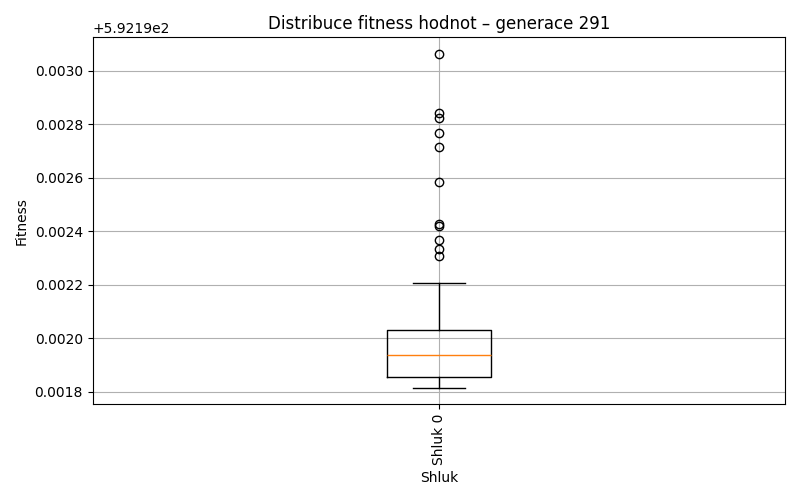
Generace 292
Stabilita mezi generací 291 → 292:
Shluk -1 → 0: 19 jedinců (76.0 %)
Shluk -1 → -1: 6 jedinců (24.0 %)
Shluk 0 → 0: 75 jedinců (100.0 %)
Jaccardovo mapování a overlap: Generace 291 → 292
- Shluk 0 → 0 (Jaccard: 0.80, Overlap: 1.00)
Posun centroidů mezi generací 291 → 292:
- Shluk 0: 0.0130
Generace 293
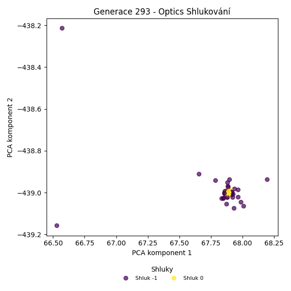
Stabilita mezi generací 292 → 293:
Shluk 0 → -1: 28 jedinců (29.8 %)
Shluk 0 → 0: 66 jedinců (70.2 %)
Shluk -1 → -1: 6 jedinců (100.0 %)
Jaccardovo mapování a overlap: Generace 292 → 293
- Shluk 0 → 0 (Jaccard: 0.70, Overlap: 1.00)
Posun centroidů mezi generací 292 → 293:
- Shluk 0: 0.0092
Generace 294
Stabilita mezi generací 293 → 294:
Shluk -1 → 0: 29 jedinců (85.3 %)
Shluk -1 → -1: 5 jedinců (14.7 %)
Shluk 0 → 0: 66 jedinců (100.0 %)
Jaccardovo mapování a overlap: Generace 293 → 294
- Shluk 0 → 0 (Jaccard: 0.69, Overlap: 1.00)
Posun centroidů mezi generací 293 → 294:
- Shluk 0: 0.0184
Generace 295
Stabilita mezi generací 294 → 295:
Shluk 0 → -1: 28 jedinců (29.5 %)
Shluk 0 → 0: 67 jedinců (70.5 %)
Shluk -1 → -1: 5 jedinců (100.0 %)
Jaccardovo mapování a overlap: Generace 294 → 295
- Shluk 0 → 0 (Jaccard: 0.71, Overlap: 1.00)
Posun centroidů mezi generací 294 → 295:
- Shluk 0: 0.0117
Generace 296
Stabilita mezi generací 295 → 296:
Shluk -1 → -1: 22 jedinců (66.7 %)
Shluk -1 → 0: 11 jedinců (33.3 %)
Shluk 0 → 0: 66 jedinců (98.5 %)
Shluk 0 → -1: 1 jedinců (1.5 %)
Jaccardovo mapování a overlap: Generace 295 → 296
- Shluk 0 → 0 (Jaccard: 0.85, Overlap: 0.99)
Posun centroidů mezi generací 295 → 296:
- Shluk 0: 0.0035
Generace 297
Stabilita mezi generací 296 → 297:
Shluk -1 → -1: 22 jedinců (95.7 %)
Shluk -1 → 0: 1 jedinců (4.3 %)
Shluk 0 → 0: 58 jedinců (75.3 %)
Shluk 0 → -1: 19 jedinců (24.7 %)
Jaccardovo mapování a overlap: Generace 296 → 297
- Shluk 0 → 0 (Jaccard: 0.74, Overlap: 0.98)
Posun centroidů mezi generací 296 → 297:
- Shluk 0: 0.0075
Generace 298

Stabilita mezi generací 297 → 298:
Shluk -1 → 0: 37 jedinců (90.2 %)
Shluk -1 → -1: 4 jedinců (9.8 %)
Shluk 0 → 0: 59 jedinců (100.0 %)
Jaccardovo mapování a overlap: Generace 297 → 298
- Shluk 0 → 0 (Jaccard: 0.61, Overlap: 1.00)
Posun centroidů mezi generací 297 → 298:
- Shluk 0: 0.0099
Generace 299
Stabilita mezi generací 298 → 299:
Shluk 0 → -1: 36 jedinců (37.5 %)
Shluk 0 → 0: 60 jedinců (62.5 %)
Shluk -1 → -1: 4 jedinců (100.0 %)
Jaccardovo mapování a overlap: Generace 298 → 299
- Shluk 0 → 0 (Jaccard: 0.62, Overlap: 1.00)
Posun centroidů mezi generací 298 → 299:
- Shluk 0: 0.0124